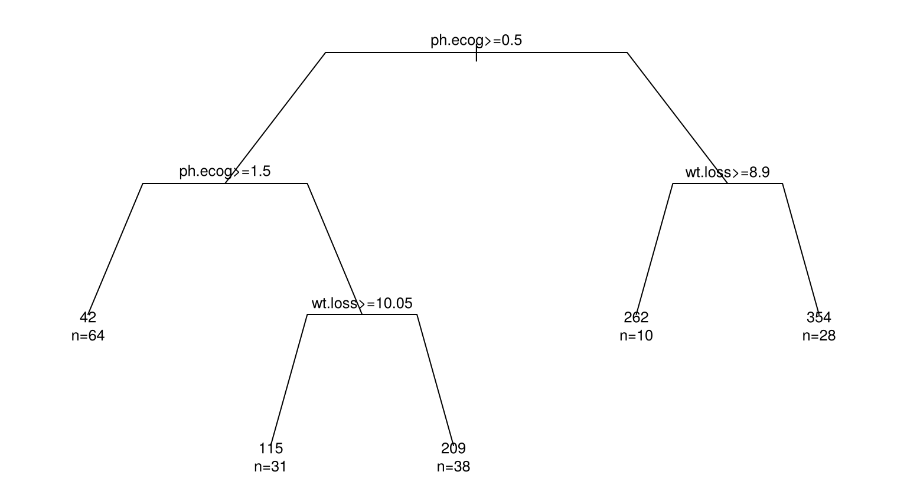
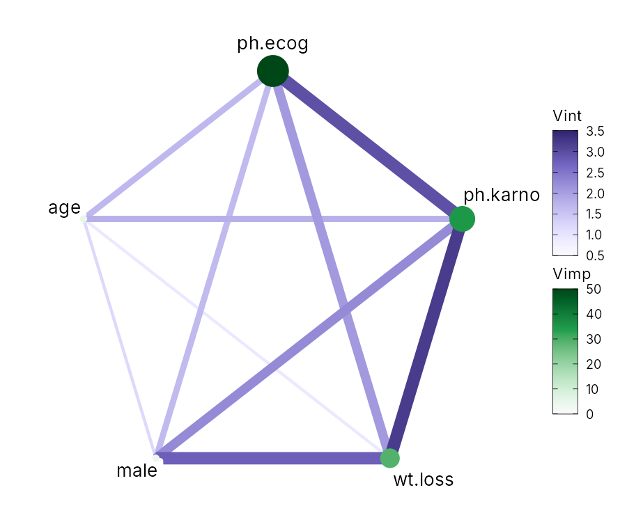
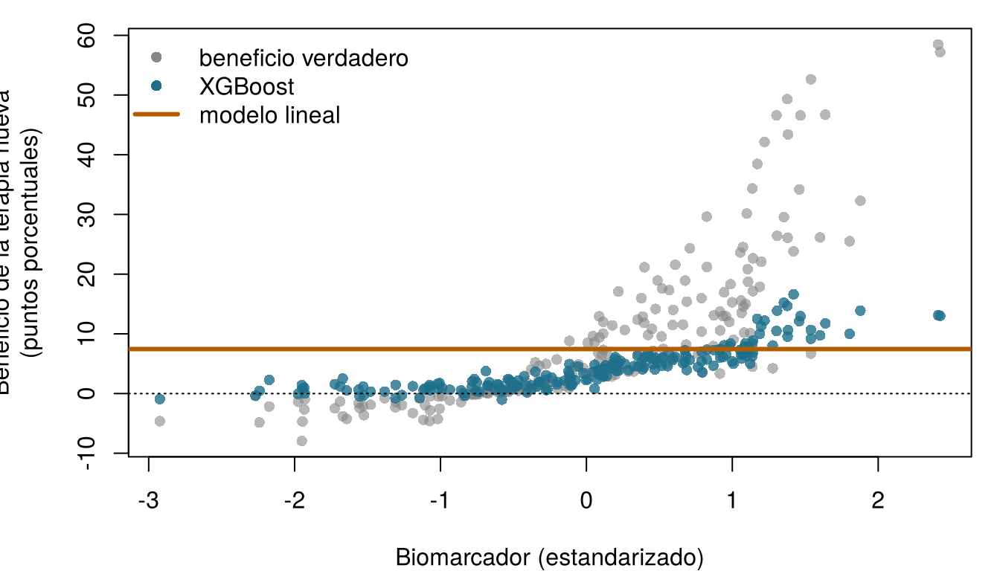
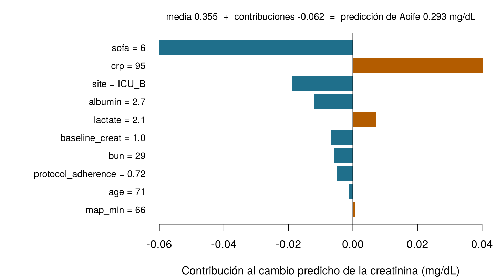

| Desenlace | Modelo | Predictores | MAE de prueba | R² de prueba | AUC de prueba | Brier de prueba |
|---|---|---|---|---|---|---|
| Cambio de la creatinina (mg/dL) | Regresión lineal (OLS), Capítulo 4 | P10 | 0,141 | 0,656 | n/d | n/d |
| Cambio de la creatinina (mg/dL) | Bosque aleatorio (500 árboles), Capítulo 6 | P10 | 0,153 | 0,587 | n/d | n/d |
| LRA | Regresión logística (sin penalización), el modelo principal, Capítulo 5 | P5 | n/d | n/d | 0,855 | 0,149 |
| LRA | Bosque aleatorio clasificador (500 árboles), Capítulo 6 | P5 | n/d | n/d | 0,838 | 0,158 |
12 IA interpretable y explicable
Cada pregunta de abajo trata de un modelo de predicción. ¿Se refiere al modelo entero, sobre todos los pacientes (global), o a la predicción de un paciente (local)? Haz tu mejor apuesta: el capítulo explica ambas cosas.
| Pregunta | Tu etiqueta |
|---|---|
| ¿En qué características se apoya más el bosque de la UCI Sala 7, considerando todos los pacientes? | |
| ¿Por qué el riesgo predicho de Aoife es 49 %? | |
| En promedio, ¿cómo cambia el tiempo de seguimiento predicho de los pacientes con cáncer de pulmón a medida que aumenta su pérdida de peso? | |
| ¿Bajaría el riesgo predicho de Aoife por debajo del 25 % si su presión arterial fuera más alta? |
Cómo usar este capítulo
¿Empiezas aquí?
Este capítulo explica modelos construidos en capítulos anteriores. En resumen:
- Modelo y predicción (Definición 1.3). Un modelo \(\hat f\) transforma las características \(\mathbf{x}\) de un paciente en una predicción \(\hat y = \hat f(\mathbf{x})\). Se ajusta en un conjunto de entrenamiento y se evalúa en un conjunto de prueba que nunca ha visto (Sección 1.8, Definición 1.9).
- Coeficientes (Capítulo 4). Un modelo lineal predice \(\hat y = \beta_0 + \beta_1 x_1 + \dots + \beta_p x_p\); \(\beta_j\) es el cambio de la predicción cuando \(x_j\) aumenta una unidad y las demás características se mantienen fijas. El lasso encoge algunos coeficientes hasta exactamente cero.
- Regresión logística y odds ratios (Capítulo 5). El modelo logístico es lineal en la escala de las log-odds; para Aoife da un riesgo de lesión renal aguda (LRA) de 49 %. En el Capítulo 1, el equipo de la UCI Sala 7 decidió que merece la pena iniciar el paquete siempre que el riesgo supere 0,25.
- Árboles, bosques aleatorios y boosting (Capítulo 6). Un árbol predice con una secuencia de preguntas del tipo si–si no; un bosque promedia cientos de árboles cultivados en muestras bootstrap; el boosting añade árboles pequeños uno tras otro. Los ensambles predicen mejor, pero no se pueden leer. La importancia por impureza resume cuánto ayudó cada característica en las divisiones de los árboles.
- Las redes neuronales (Capítulo 7) aprenden capas de características y son los modelos menos legibles de todos; los modelos bayesianos (Capítulo 8) dan una distribución entera de modelos plausibles en lugar de uno solo.
- Predicción no es causalidad (Sección 1.10). Una característica puede predecir un desenlace sin causarlo; en la UCI Sala 7, la gravedad confunde el efecto aparente de la adherencia al protocolo.
| Ejemplo | Quién o qué | Desenlace | Caras que vas a conocer |
|---|---|---|---|
| 1 UCI Sala 7 | 1250 pacientes de UCI en 4 hospitales | variación de la creatinina en 48 h (lesión renal aguda si ≥ 0,3 mg/dL) | Aoife (71 años, sepsis, riesgo limítrofe), Tomás (54 años, riesgo bajo), Priya (38 años, riesgo alto); la Dra. Emma Walsh; Seán, el farmacéutico |
| 2 Ensayo ONCO-1 | 1000 pacientes aleatorizados a quimioterapia o no | reducción del tumor (%) | pacientes #0042 y #0917 |
| 3 HomeBeat | 500 personas que llevan un reloj inteligente en casa | puntuación de estrés, evento de deterioro | Lena |
| 4 CellWorks | 420 lotes de producción de una terapia celular | puntuación de potencia | lote CW-118 |
Los cuatro conjuntos de datos son simulados y pueden descargarse en el apéndice de datos. La presentación completa está en la Sección 1.1.
Este capítulo trata de entender lo que hace un modelo ajustado. Conocerás dos familias de métodos (los que leen la estructura del propio modelo y los que lo sondean desde fuera) y las usarás para responder preguntas globales (¿en qué se apoya el modelo, y cómo?) y locales (¿por qué esta predicción, y qué la cambiaría?). Tiene trece secciones y un Laboratorio, nueve comprobaciones rápidas, tres widgets “Pruébalo”, un desafío y tres misiones de programación en R y Python. Calcula unas dos horas. Los cálculos más pesados (bosques, boosting, BART, miles de evaluaciones de modelos) se hicieron de antemano; los widgets y las misiones usan sus resultados o modelos pequeños que se ejecutan en tu navegador.
La notación de un vistazo (solo para consulta)
| Símbolo | Significado | Sección |
|---|---|---|
| \(\hat f\) | un modelo ajustado, tratado como una función que podemos consultar | Sección 12.1 |
| \(\mathcal{L}(\hat f, D)\) | error de \(\hat f\) en los datos \(D\) (aquí, el error absoluto medio, MAE) | Sección 12.6 |
| \(D^{(j,m)}\) | los datos con la columna \(j\) barajada por \(m\)-ésima vez, \(m = 1, \dots, N_s\) | Sección 12.6 |
| \(\text{imp}_j\) | importancia por permutación de la característica \(j\) | Sección 12.6 |
| \(\mathbf{x}_S\), \(\mathbf{x}_C\) | las características de interés (conjunto \(S\)) y todas las demás (su complemento \(C\)) | Sección 12.7 |
| \(\hat f_S(\mathbf{x}_S)\) | función de dependencia parcial | Sección 12.7 |
| \(\hat f^{(i)}_S(\mathbf{x}_S)\) | curva de esperanza condicional individual (ICE) del paciente \(i\) | Sección 12.7 |
| \(H_{jk}\) | intensidad de interacción de Friedman–Popescu de las características \(j\) y \(k\) | Sección 12.8 |
| \(v(S)\), \(\phi_j\), \(\phi_0\) | valor de una coalición \(S\), valor de Shapley de la característica \(j\), predicción de referencia | 1 |
La lista completa está en la página de notación.
12.1 ¿Por qué explicar un modelo?
En los capítulos anteriores juzgamos los modelos sobre todo por lo bien que predicen. En la ciencia, la medicina y la regulación, la precisión predictiva por sí sola no basta. La salida de un modelo entra en un argumento (“este paciente tiene un riesgo alto porque…”), en una decisión (iniciar el paquete o no) y en una cadena de rendición de cuentas (quién responde si algo sale mal). Por eso su comportamiento debe ir acompañado de representaciones que las personas puedan examinar, comparar y criticar.
Definición 12.1 (Interpretabilidad y explicabilidad) Un modelo es interpretable cuando una persona puede entender cómo funciona a partir de su estructura: una ecuación lineal corta, un árbol pequeño, una puntuación por puntos. La explicabilidad se refiere a métodos que construyen una descripción aparte y más sencilla del comportamiento de un modelo (una clasificación por importancia, una curva, una lista de contribuciones para un paciente), por lo general para modelos que no son interpretables en sí mismos. Ambas se juzgan en relación con un público, un contexto y un propósito: no existe una explicación adecuada para todos (Doshi-Velez y Kim 2017; Lipton 2018; Molnar 2022).
La interpretabilidad es relacional: no es una propiedad de un algoritmo por sí solo. Un modelo es interpretable para alguien, para algo. Lo que cuenta como explicación adecuada en la investigación metodológica puede diferir de lo que Emma necesita junto a la cama, de lo que el hijo de Aoife necesita para confiar en el equipo o de lo que un regulador necesita para auditar un dispositivo (Figura 12.1).
![Ilustración de un puente de piedra con la etiqueta interpretabilidad. A la izquierda, un modelo predictivo: un diagrama de red, la ecuación y igual a f de X más épsilon y una superficie tridimensional compleja con la etiqueta salida compleja. A la derecha, la interpretación humana en tres ámbitos: investigación científica, práctica clínica, y políticas y regulación. La viga del puente dice contexto, público, objetivo epistémico, y debajo hay tres paneles: explicación, comparación y evaluación. Más abajo, la alfabetización va de básica a avanzada, y la lógica está formada por contexto y símbolos.](images/interpretable_ai.jpg)
Ayuda ver una explicación como un acto de comunicación. Toda explicación tiene una fuente (el modelo ajustado), un mensaje (alguna representación de él) y un receptor (una persona que la interpreta dentro de su propio marco conceptual). En la teoría de la comunicación de Shannon, ningún mensaje se transmite sin ser codificado y decodificado (Shannon 1948). Un modelo codifica su conocimiento en una forma que las personas no pueden leer directamente: cientos de árboles, miles de pesos, una distribución a posteriori sobre funciones. Un método de explicación recodifica parte de ese conocimiento para un receptor humano. Podemos escribirlo como una transformación \(\mathcal{T}\) que toma un modelo ajustado \(\hat f\) y unos datos \(D\) y devuelve una representación \(\mathcal{R}\):
\[ \mathcal{T}(\hat f, D) \longmapsto \mathcal{R}. \qquad(12.1)\]
La representación \(\mathcal{R}\) puede ser una lista de números (puntuaciones de importancia), una curva (dependencia parcial), una matriz (intensidades de interacción) o un conjunto de contribuciones para un paciente (valores de Shapley). Nunca reproduce el modelo entero; conserva algunos rasgos y descarta otros. Dos consecuencias recorren todo el capítulo. Primera, toda explicación es una simplificación y puede engañar si la parte descartada era precisamente la que importaba. Segunda, la Ecuación 12.1 depende de \(D\): el mismo modelo, explicado con datos distintos, puede contar una historia distinta.
Esta visión tiene una larga historia en la ciencia. Los modelos no son solo instrumentos de predicción, sino también marcos de representación: una regresión lineal expresa relaciones mediante coeficientes, bajo supuestos explícitos; una regresión logística, mediante log-odds; un árbol, mediante una partición recursiva de los pacientes. Los modelos estadísticos clásicos se elegían en parte porque sus parámetros tenían un significado directo. A medida que el aprendizaje automático pasó a bosques, boosting y redes neuronales, la precisión mejoró y ese significado directo se perdió, de modo que la interpretación necesitó métodos propios. Esos métodos se entienden mejor como operaciones de metamodelado: toman un modelo ajustado y devuelven un resumen estructurado de su comportamiento, inspeccionando su estructura o perturbando sus entradas de forma controlada, por lo general como una figura pensada para ser examinada y comparada (Molnar 2022). Diseñarlos implica siempre compromisos entre fidelidad al modelo ajustado, robustez frente al ruido muestral, coste computacional y claridad para el público al que se dirigen.
¿Para qué tomarse la molestia? En la atención sanitaria, las explicaciones sirven a cuatro propósitos: depuración (un modelo que se apoya en el identificador de un hospital, o en una característica registrada después del desenlace, puede ser descubierto: las comprobaciones de “¿demasiado bueno para ser verdad?” del Capítulo 6); comprensión científica (¿qué factores biológicos o clínicos llevan la señal?); confianza y posibilidad de impugnación (un paciente, un clínico o un tribunal pueden cuestionar una recomendación); y regulación, que en Europa exige ahora de forma explícita salidas que los usuarios puedan interpretar y supervisión humana de los sistemas de alto riesgo. La Sección 12.2 examina cada uno de estos usos, empezando por la ley.
Hay también un argumento fuerte contra fiarse en absoluto de explicaciones hechas a posteriori. Cuando hay mucho en juego, argumenta Rudin (2019), deberíamos preferir modelos interpretables por diseño (puntuaciones cortas, modelos lineales dispersos, árboles pequeños) siempre que predigan más o menos igual de bien, en lugar de construir una caja negra y luego explicarla con un segundo modelo aproximado. Ten presente este argumento: en la UCI Sala 7, los modelos legibles son al menos tan precisos como los bosques (Tabla 12.1). Para el cambio de la creatinina, la regresión lineal (OLS) del Capítulo 4 sigue teniendo el menor MAE de prueba de los dos, 0,141 mg/dL frente a 0,153 del bosque aleatorio del Capítulo 6; para la LRA, el modelo logístico del Capítulo 5 tiene un AUC algo mayor que el bosque clasificador. Ambos pueden leerse directamente.
El mismo bosque de la UCI Sala 7 se explica a tres públicos: un científico de datos, Emma y el hijo de Aoife. ¿Qué afirmación encaja con la idea de que la interpretabilidad es relacional?
12.2 Por qué importan las explicaciones: regulación y otros usos
Vuelve a mirar la Figura 12.1. En la orilla derecha hay tres ámbitos (investigación científica, práctica clínica, y políticas y regulación), y cada uno envía una petición distinta a través del puente. Un regulador quiere pruebas de que un dispositivo es seguro y de que sus usuarios pueden supervisarlo; un clínico quiere saber si el número de esta noche tiene sentido para este paciente; un científico quiere saber qué ha aprendido el modelo sobre la enfermedad. Empezamos por la ley, porque en Europa la ley dice ahora algo explícito sobre las explicaciones, y después pasamos a los otros usos.
12.2.1 Lo que exige la ley
El Reglamento de IA. Un software que proporciona información utilizada para tomar decisiones diagnósticas o terapéuticas es un producto sanitario de clase IIa como mínimo según la regla de clasificación 11 del Reglamento de Productos Sanitarios de la UE (MDR), y por eso necesita la evaluación de un organismo notificado (European Parliament and Council of the European Union 2017, Annex VIII, Rule 11). El Reglamento de IA clasifica como de alto riesgo cualquier sistema de IA que sea un producto, o un componente de seguridad de un producto, cubierto por las leyes enumeradas en su Anexo I (entre ellas el MDR y el reglamento sobre productos sanitarios para diagnóstico in vitro) cuando ese producto necesita dicha evaluación por terceros (European Parliament and Council of the European Union 2024, Article 6(1) and Annex I). La mayoría de los modelos de predicción clínica comercializados, incluida una puntuación de riesgo de LRA como la de la pantalla de Aoife, son por tanto sistemas de IA de alto riesgo (el Capítulo 19 recorre la clasificación). Tres artículos del Reglamento tratan directamente de las explicaciones.
- Artículo 13, transparencia y comunicación de información a los responsables del despliegue. Un sistema de alto riesgo debe diseñarse de modo que su funcionamiento sea “lo suficientemente transparente para que los responsables del despliegue interpreten y usen correctamente sus resultados de salida”. Sus instrucciones de uso deben indicar sus capacidades y limitaciones y, cuando proceda, las características técnicas que permitan “proporcionar información pertinente para explicar sus resultados de salida” (European Parliament and Council of the European Union 2024, Article 13(1) and 13(3)(b)(iv)). El responsable del despliegue es el hospital; quienes interpretan son Emma y Seán.
- Artículo 14, supervisión humana. Las personas que supervisan el sistema deben poder entender sus capacidades y limitaciones, ser conscientes de la tendencia a confiar en exceso en su salida (el sesgo de automatización), interpretar correctamente la salida, teniendo en cuenta las herramientas y los métodos de interpretación disponibles, y desestimarla, invalidarla o detener el sistema (European Parliament and Council of the European Union 2024, Article 14(4)). Los métodos de explicación aparecen como una ayuda para la supervisión, no como un sustituto de ella.
- Artículo 86, derecho a explicación de decisiones individuales. Una persona afectada por una decisión que el responsable del despliegue haya tomado basándose en la salida de un sistema de alto riesgo, y que produzca efectos jurídicos o le afecte de modo igualmente significativo, con consecuencias que considere perjudiciales para su salud, su seguridad o sus derechos fundamentales, tiene derecho a obtener de él “explicaciones claras y significativas acerca del papel que el sistema de IA ha tenido en el proceso de toma de decisiones y los principales elementos de la decisión adoptada” (European Parliament and Council of the European Union 2024, Article 86(1)). Lee el alcance con atención: el artículo cubre los usos de alto riesgo enumerados en el Anexo III (por ejemplo, sistemas que deciden la admisibilidad para servicios públicos de asistencia sanitaria o que hacen el triaje de pacientes de urgencias), y no los productos sanitarios que son de alto riesgo por el Anexo I. La pregunta del hijo de Aoife es justa, pero la responden la buena práctica clínica y la información que exigen los artículos 13 y 14, no el artículo 86.
Ninguno de estos artículos indica un método. El Reglamento pide un resultado, salidas que sus usuarios puedan interpretar y supervisar, y deja los medios en manos del proveedor. Sus obligaciones se aplican por etapas (European Parliament and Council of the European Union 2024, Article 113).
Protección de datos. El RGPD da a todas las personas el derecho a “no ser objeto de una decisión basada únicamente en el tratamiento automatizado, incluida la elaboración de perfiles”, que produzca efectos jurídicos o le afecte significativamente de modo similar; cuando esas decisiones están permitidas, las garantías incluyen como mínimo “el derecho a obtener intervención humana”, a expresar el propio punto de vista y a impugnar la decisión (European Parliament and Council of the European Union 2016, Article 22(1) and 22(3)). El considerando 71 añade el derecho “a recibir una explicación de la decisión tomada después de tal evaluación”, y los artículos 13 a 15 exigen “información significativa sobre la lógica aplicada”. Los considerandos no son vinculantes por sí mismos, y los juristas discrepan sobre hasta qué punto estas disposiciones equivalen a un derecho a la explicación de una decisión individual (Wachter, Mittelstadt, y Floridi 2017). Una puntuación de riesgo que Emma lee y sopesa no es una decisión basada “únicamente” en un tratamiento automatizado: un motivo más para que el humano en el ciclo sea real.
Productos sanitarios. El MDR no menciona la explicabilidad como tal, pero llega al mismo lugar por otros caminos. El fabricante debe demostrar que el producto cumple los requisitos generales de seguridad y funcionamiento, incluidos los relativos al software (Anexo I, sección 17), mediante una evaluación clínica (artículo 61 y Anexo XIV); describir su diseño, finalidad prevista, funcionamiento y riesgos en la documentación técnica (Anexo II); y dar a los usuarios información sobre su uso previsto, su funcionamiento y sus limitaciones (Anexo I, sección 23) (European Parliament and Council of the European Union 2017). Un organismo notificado que revise un bosque para la LRA querrá saber en qué se apoya, si eso es clínicamente plausible y en qué pacientes falla: las preguntas de este capítulo.
Orientaciones internacionales. La Food and Drug Administration de EE. UU., Health Canada y la MHRA del Reino Unido publicaron en 2021 diez principios de Buenas Prácticas de Aprendizaje Automático para el desarrollo de productos sanitarios (Good Machine Learning Practice); dos de ellos dicen que el foco se pone en el rendimiento del equipo humano–IA y que los usuarios reciben información clara y esencial (U.S. Food and Drug Administration, Health Canada, y Medicines and Healthcare products Regulatory Agency 2021). Sus principios de 2024 sobre transparencia la definen como el grado en que la información apropiada sobre un producto (su uso previsto, desarrollo, rendimiento y, cuando está disponible, su lógica) se comunica con claridad a los públicos pertinentes, y tratan la explicabilidad como el grado en que esa lógica puede explicarse a una persona (U.S. Food and Drug Administration, Health Canada, y Medicines and Healthcare products Regulatory Agency 2024). Para los medicamentos, el documento de reflexión de la Agencia Europea de Medicamentos (EMA) sobre la IA en el ciclo de vida de los medicamentos (2024) prefiere modelos transparentes; acepta modelos de caja negra cuando los desarrolladores demuestran que los transparentes tienen un rendimiento o una capacidad de generalización insatisfactorios, pero entonces espera una justificación documentada, métodos de explicabilidad siempre que sea posible y que esas aplicaciones se discutan con la agencia mediante cualificación o asesoramiento científico (European Medicines Agency 2024).
12.2.2 Otros usos de las explicaciones
- Adopción clínica y confianza. A los clínicos se les pide que actúen según la salida de un modelo y que respondan de la decisión. Una explicación que les permita contrastar la salida con lo que saben del paciente (el SOFA de Aoife, inferior a la media, por ejemplo: véase la
- sostiene la confianza allí donde es merecida; una explicación que solo parece plausible puede dar una falsa tranquilidad (Ghassemi, Oakden-Rayner, y Beam 2021).
- Depuración, fugas y atajos. El uso más práctico de todos. En el Capítulo 3, los genes 08, 14 y 19 de ONCO-1 resultaron ser copias del desenlace; el bosque del Capítulo 6 los situó en lo más alto de su clasificación por importancia (Sección 12.6), y así es como se detecta una fuga de ese tipo. Los modelos de imagen hacen lo mismo con los atajos: redes entrenadas con radiografías de tórax aprendieron las marcas del hospital o la forma en que se tomó la imagen en lugar de los pulmones, y los métodos de explicación ayudaron a revelarlo (Zech et al. 2018; DeGrave, Janizek, y Lee 2021; Geirhos et al. 2020).
- Auditorías de equidad. Las explicaciones ayudan a preguntar por qué un modelo rinde de forma distinta entre grupos. Un algoritmo muy usado en EE. UU. predecía los costes sanitarios como indicador indirecto de las necesidades de salud; como se gastaba menos en los pacientes negros con las mismas necesidades, subestimaba sistemáticamente lo enfermos que estaban (Obermeyer et al. 2019). Comprobar en qué se apoya un modelo (aquí, la propia elección del desenlace) forma parte de cualquier auditoría de equidad.
- Descubrimiento científico. Las medidas de interacción y las curvas ICE pueden señalar efectos que merece la pena poner a prueba, como el beneficio de una terapia que crece con un biomarcador en la Sección 12.8. Generan hipótesis; confirmarlas requiere estudios diseñados (Capítulo 13).
- Desarrollo y fabricación de medicamentos. Hoy los modelos criban compuestos, seleccionan pacientes para ensayos y vigilan la producción. Según las normas de correcta fabricación (NCF, o GMP en inglés), toda decisión de liberación debe justificarse y documentarse. Si CellWorks usara un modelo para señalar lotes como CW-118 antes de su liberación, el equipo de calidad necesitaría ver qué medidas del proceso motivaron la alerta, comprobar que tienen sentido y dejarlo registrado. El borrador del Anexo 22 de las GMP de la UE sobre inteligencia artificial, publicado por la Comisión Europea (2025), propone exactamente esto para las aplicaciones críticas: registrar qué características contribuyeron a cada clasificación durante las pruebas, registrar la confianza del modelo y hacer que expertos revisen si el modelo se apoya en características apropiadas (European Commission 2025).
- Ciencia reguladora. Los reguladores y las oficinas de registro también usan modelos interpretables. En la evaluación del riesgo de los plaguicidas, el aprendizaje automático interpretable aplicado a una base ampliada de estudios de absorción dérmica humana in vitro identificó los principales predictores de la absorción y sirvió de base para los valores por defecto que se usan cuando no hay ningún estudio disponible (D. Sarti et al. 2025). Las oficinas de registro de variedades vegetales han usado bosques aleatorios y modelos aditivos bayesianos para mostrar a los solicitantes qué efectos de genotipo por ambiente determinan el rendimiento y la calidad en los ensayos oficiales (D. A. Sarti et al. 2025).
| Público | Pregunta típica | Explicación útil | En este capítulo |
|---|---|---|---|
| Paciente o familia (el hijo de Aoife) | ¿Por qué este número para mí, y qué pasa ahora? | Una explicación local en lenguaje sencillo y el plan de cuidados | Las contribuciones de Aoife a sus log-odds (1) |
| Clínico (Emma) | ¿Tiene sentido esta salida para este paciente? ¿Cuándo debo desestimarla? | Contribuciones locales contrastadas con la historia clínica; limitaciones conocidas | Valores de Shapley; el análisis “¿y si…?” y sus salvedades (Sección 12.10) |
| Desarrollador o auditor (Seán, el comité de gobernanza de IA) | ¿En qué se apoya el modelo? ¿Hay alguna fuga? ¿Es estable? | Importancia global en datos reservados, PDP e ICE, interacciones, incertidumbre | Importancia por permutación, la fuga de ONCO-1, VIVID, VSUP |
| Regulador u organismo notificado | ¿Es seguro y eficaz para su uso previsto, y pueden sus usuarios supervisarlo? | Uso previsto, datos, rendimiento por subgrupo, limitaciones y diseño para la supervisión, documentados | La lista de comprobación de la Sección 12.12 |
| Científico | ¿Qué ha aprendido el modelo sobre la enfermedad o el proceso? | Interacciones y formas de los efectos con su incertidumbre, leídas como hipótesis | Terapia × biomarcador (Figura 12.6); BART y bartMan (Sección 12.11) |
Un hospital compra una herramienta de IA con marcado CE, de clase IIa, que ordena a los pacientes de la UCI según su riesgo de LRA. ¿Qué afirmación sobre el Reglamento de IA es correcta?
12.3 Un mapa de los métodos
Los métodos de explicación suelen ordenarse a lo largo de tres ejes. El primero, que la primera edición de este libro usó para organizar todo el capítulo, es qué examina el método (Figura 12.2).

Definición 12.2 (Específico y agnóstico del modelo; global y local; intrínseco y post hoc) Un método específico del modelo (dependiente del modelo, o integrado) usa la estructura interna de un tipo de modelo: los coeficientes de un modelo lineal, las divisiones de un árbol, los recuentos de divisiones de un bosque: examina componentes estructurales. Un método agnóstico del modelo solo necesita poder consultar el modelo (darle entradas, leer sus predicciones), así que funciona con cualquier modelo: examina el comportamiento funcional. Una explicación global describe el comportamiento del modelo en toda una población; una explicación local describe una predicción para un individuo. Una explicación intrínseca procede de un modelo interpretable por diseño (una ecuación lineal corta, un árbol pequeño, una puntuación por puntos), de modo que el modelo es su propia explicación; una explicación post hoc se construye después del ajuste, como una descripción aparte de un modelo que no puede leerse directamente (Molnar 2022; Lipton 2018).
Los métodos específicos del modelo son rápidos y fieles, porque leen el propio modelo, pero cada uno solo funciona con su propia clase de modelos. Los métodos agnósticos permiten comparar modelos muy distintos con las mismas herramientas, al precio de muchas evaluaciones del modelo y de una dependencia de los datos usados para sondearlo, sobre todo cuando las características están correlacionadas (Hooker, Mentch, y Zhou 2021).
Los tres ejes son independientes. La importancia por impureza es específica del modelo, post hoc y global; los valores de Shapley son agnósticos del modelo, post hoc y locales; los coeficientes del modelo logístico del Capítulo 5 son específicos del modelo e intrínsecos, y dan tanto una explicación global como (1) una local. Las representaciones que producen también difieren en su forma: números (puntuaciones de importancia), objetos estructurados (una matriz de interacciones), funciones (curvas de dependencia parcial) u objetos geométricos (una red de interacciones, un árbol dibujado como diagrama). La Tabla 12.3 sitúa en el mapa los métodos de este capítulo.
| Método | Específico o agnóstico | Intrínseco o post hoc | Global o local | Pregunta que responde | Sección |
|---|---|---|---|---|---|
| Coeficientes, odds ratios | específico (lineal, logístico) | intrínseco | ambos | ¿Cuánto cambia la predicción por unidad de cada característica? | Sección 12.5 |
| Reglas de un árbol | específico (árbol único) | intrínseco | ambos | ¿Qué preguntas llevan a esta predicción? | Sección 12.5 |
| Importancia por impureza, ganancia | específico (ensambles de árboles) | post hoc | global | ¿En qué características hicieron los árboles las divisiones más útiles? | Sección 12.5 |
| Importancia por permutación | agnóstico | post hoc | global | ¿Cuánto empeora el modelo sin la información de esta característica? | Sección 12.6 |
| Dependencia parcial (PDP) | agnóstico | post hoc | global | ¿Cómo cambia la predicción media cuando varía una característica? | Sección 12.7 |
| Curvas ICE | agnóstico | post hoc | local (una curva por paciente) | ¿Difiere el efecto entre pacientes? | Sección 12.7 |
Estadístico H, VIVID (paquete vivid) |
agnóstico | post hoc | global | ¿Qué características actúan juntas en lugar de forma aditiva? | Sección 12.8 |
| Valores de Shapley | agnóstico | post hoc | local (y global, si se promedian) | ¿Cuánto alejó cada característica esta predicción de la media? | 1 |
| Explicación contrafáctica | agnóstico | post hoc | local | ¿Cuál es el cambio más pequeño que alteraría la predicción? | Sección 12.10 |
Proporciones de inclusión de BART (paquete bartMan) |
específico (BART) | post hoc | global | ¿Con qué frecuencia dividen los árboles a posteriori en cada característica, o en dos características a lo largo de una rama? | Sección 12.11 |
| Paleta de incertidumbre que suprime valores (VSUP) | visualización de cualquiera de los anteriores | n/d | global | ¿Qué partes de una explicación son a la vez grandes y fiables? | Sección 12.11 |
12.4 Una consulta de cáncer de pulmón, y una advertencia sobre el tiempo
Para comparar muchos modelos con las mismas herramientas necesitamos un conjunto de datos pequeño. Además de la UCI Sala 7, usamos uno de una consulta de seguimiento oncológico. Es simulado (no describe a ningún paciente real), está inspirado en un conjunto de datos bien conocido de pacientes con cáncer de pulmón avanzado (Loprinzi et al. 1994) y es lo bastante pequeño para miles de evaluaciones de modelos: 228 pacientes, cinco predictores y un desenlace (véase el apéndice de datos).
age(edad, en años) ysex(sexo);ph.ecog: el estado funcional ECOG (performance status) valorado por el médico, de 0 (plenamente activo) a 3 (en cama o sillón más de la mitad del día) (Oken et al. 1982);ph.karno: la puntuación de Karnofsky, otra medida de lo mismo valorada por el médico, en una escala de 0 a 100, donde 100 es la actividad normal (Karnofsky y Burchenal 1949);wt.loss: peso perdido en los seis meses anteriores (kg);time: días de seguimiento, ystatus: si el paciente había fallecido (dead) o seguía vivo (alive) cuando terminó el seguimiento.
| patient_id | age | sex | ph.ecog | ph.karno | wt.loss | time | status |
|---|---|---|---|---|---|---|---|
| 1 | 68 | female | 3 | 46 | 11.3 | 30 | alive |
| 2 | 53 | female | 2 | 68 | 11.6 | 30 | dead |
| 3 | 64 | female | 1 | 80 | 6.3 | 133 | alive |
| 4 | 62 | female | 1 | 100 | 15.1 | 171 | alive |
| 5 | 57 | male | 1 | 80 | 24.3 | 30 | dead |
| 6 | 40 | female | 1 | 86 | 4.6 | 192 | alive |
Siguiendo la primera edición de este libro, predecimos time a partir de los cinco predictores con los modelos de la Parte II, ajustados en 171 pacientes de entrenamiento y probados en los otros 57 (Tabla 12.5).
| Modelo | RMSE de prueba (días) | MAE de prueba (días) |
|---|---|---|
| Media (sin modelo) | 117.81 | 102.90 |
| Regresión lineal | 52.65 | 43.68 |
| Lasso | 53.30 | 45.01 |
| Árbol (profundidad 4, elegida por VC) | 45.37 | 33.22 |
| Bosque aleatorio | 39.67 | 30.76 |
| XGBoost | 40.92 | 32.41 |
| Red neuronal (2 capas ocultas) | 43.34 | 32.71 |
Los modelos flexibles (el bosque, el boosting, la red e incluso un árbol único) superan claramente a los modelos lineales (MAE de prueba de unos 31 días para el bosque, frente a 44 para la regresión lineal). El motivo se ve en los datos: ningún paciente tiene un time inferior a 30 días (68 pacientes tienen exactamente 30), así que la relación tiene un suelo que ninguna recta puede seguir. Sin embargo, para fiarnos de cualquier explicación de estos modelos, primero debemos ser honestos sobre lo que es time.
time no es el tiempo de supervivencia
De los 228 pacientes, 135 (59 %) estaban vivos cuando terminó su seguimiento. Para ellos, time solo dice que sobrevivieron al menos ese tiempo: su tiempo de supervivencia está censurado. Tratar time como un número corriente que predecir, como hacemos aquí, cuenta a un paciente visto vivo por última vez el día 192 exactamente igual que a un paciente que falleció el día 192 y, por tanto, subestima la supervivencia, sobre todo en los pacientes en buen estado, que son los que tienen más probabilidad de estar censurados. Lo que predicen los modelos que siguen son, por tanto, días de seguimiento registrado, no supervivencia.
Mantenemos esta simplificación porque el conjunto de datos es pequeño y completo y nos permite comparar muchos modelos con las mismas herramientas de explicación, que es el objetivo de este capítulo. Para un pronóstico real usarías métodos pensados para desenlaces censurados, como el modelo de Cox (Cox 1972) o los bosques aleatorios de supervivencia (Ishwaran et al. 2008), y los métodos de explicación de este capítulo se aplican a ellos del mismo modo. Una buena explicación de un modelo del desenlace equivocado sigue siendo una explicación del desenlace equivocado.
En la consulta de pulmón, la importancia por permutación (más abajo) dice que el bosque se apoya mucho en el estado funcional ECOG. Sabiendo que time está censurado en la mayoría de los pacientes, ¿qué puedes concluir con seguridad?
12.5 Leer el propio modelo
12.5.1 Coeficientes
La interpretación específica del modelo es más transparente en los modelos lineales, donde toda la estructura ajustada es una lista de coeficientes. La Tabla 12.6 muestra la regresión lineal de time sobre los cinco predictores en la consulta de pulmón, con cada coeficiente expresado también por desviación estándar de su característica, para que puedan compararse características medidas en unidades distintas.
| Característica | Coeficiente | EE | Por DE | Sin Karnofsky | |
|---|---|---|---|---|---|
| age | Edad (por año) | -0,22 | 0,42 | -2,0 | -0,21 |
| male | Sexo masculino | -9,46 | 7,80 | -4,7 | -11,67 |
| ph.ecog | ECOG (por nivel) | -72,17 | 9,54 | -67,1 | -100,37 |
| ph.karno | Karnofsky (por punto) | 1,71 | 0,52 | 28,8 | n/d |
| wt.loss | Pérdida de peso (por kg) | -7,68 | 0,79 | -38,8 | -7,37 |
Un peor estado funcional (ECOG más alto) y una mayor pérdida de peso van con un seguimiento más corto; una mejor puntuación de Karnofsky va con un seguimiento más largo; la edad y el sexo aportan poco. Hasta aquí, todo legible. Pero mira la columna de la derecha: cuando se elimina la puntuación de Karnofsky, el coeficiente del ECOG pasa de -72,2 a -100,4 días por nivel. El motivo es que ECOG y Karnofsky miden casi lo mismo (su correlación es -0,89). Con ambos en el modelo, cada coeficiente responde a una pregunta extraña (¿y si el ECOG empeorara mientras la puntuación de Karnofsky siguiera igual?) sobre una combinación de valores que apenas existe. Un coeficiente se interpreta siempre manteniendo fijas las demás características, y su significado cambia cuando cambian las demás características. Los modelos penalizados hacen visible la inestabilidad: el lasso del Capítulo 4 puede conservar una de dos características correlacionadas y descartar la otra, casi por azar.
En la UCI Sala 7, el modelo logístico del Capítulo 5 es el modelo que Emma ya usa. Sus odds ratios (1,50 por punto de SOFA (Vincent et al. 1996), 1,35 por mmol/L de lactato, 0,96 por mmHg de la presión arterial media mínima, PAM) son una descripción completa y global del modelo. Veremos en la 1 que, para un modelo lineal o logístico, también dan una explicación local exacta del riesgo de Aoife, sin coste adicional.
12.5.2 Reglas de un árbol
Un árbol único es su propia explicación: una secuencia de reglas del tipo si–si no que se puede seguir con el dedo (Figura 12.3).

La primera división es por el estado funcional ECOG, y las siguientes afinan la predicción de nuevo con el ECOG y con la pérdida de peso. La puntuación de Karnofsky ni siquiera aparece, no porque no importe, sino porque el ECOG ya lleva casi la misma información. Las variables que aparecen pronto suelen importar mucho al árbol, pero la posición de una división no es una medida de importancia: una característica que nunca aparece en la raíz puede usarse aun así en muchas divisiones más abajo, y una característica correlacionada puede ocupar el lugar de otra si los datos cambian un poco (la inestabilidad del Capítulo 6).
12.5.3 Importancia integrada de los ensambles
Los bosques y los modelos de boosting no pueden leerse, pero guardan un registro de su propia construcción. La importancia por impureza de un bosque suma, sobre todos los árboles, cuánto redujeron el error las divisiones en cada característica; XGBoost (Chen y Guestrin 2016) presenta la misma idea como ganancia (gain). En la UCI Sala 7 (Tabla 12.7), ambas ponen el SOFA en primer lugar y el nitrógeno ureico en sangre (BUN) en segundo.
| Característica | Bosque: importancia por impureza | XGBoost: proporción de la ganancia |
|---|---|---|
| sofa | 0.2562 | 0.3400 |
| bun | 0.1381 | 0.1041 |
| baseline_creat | 0.1106 | 0.0924 |
| map_min | 0.1014 | 0.0678 |
| protocol_adherence | 0.0913 | 0.0551 |
| crp | 0.0847 | 0.0608 |
| albumin | 0.0809 | 0.0575 |
| lactate | 0.0583 | 0.0436 |
Estas importancias integradas son rápidas y útiles para un cribado, pero tienen tres debilidades conocidas. Se calculan en los datos de entrenamiento, así que premian características que el modelo usó para ajustar ruido; favorecen las características con muchos puntos de división posibles (las continuas frente a las binarias) (Strobl et al. 2007); y no dicen nada sobre la dirección: un valor grande no te dice si más de esa característica sube o baja la predicción. Recuerda el BUN: veremos que su posición alta es en gran parte prestada de las características con las que está correlacionado.
En la consulta de pulmón, eliminar la puntuación de Karnofsky del modelo lineal cambia mucho el coeficiente del estado funcional ECOG. ¿Cuál es la mejor explicación?
12.6 Importancia por permutación
Pasamos ahora a los métodos agnósticos del modelo, que tratan el modelo como una caja negra. El primero es la idea más sencilla del capítulo: si el modelo se apoya en una característica, barajar esa característica debería empeorar sus predicciones. Barajar una columna (repartir sus valores al azar entre los pacientes) conserva la distribución de la característica, pero rompe su vínculo con el desenlace y con las demás características. La idea se remonta a los bosques aleatorios de Breiman (2001) y Fisher, Rudin, y Dominici (2019) la generalizaron a cualquier modelo.
Definición 12.3 (Importancia por permutación) Sea \(\mathcal{L}(\hat f, D)\) el error de un modelo ajustado \(\hat f\) en un conjunto de datos \(D\) (por ejemplo, el error absoluto medio en el conjunto de prueba), y sea \(D^{(j,m)}\) una copia de \(D\) en la que la columna de la característica \(j\) se ha barajado al azar, por \(m\)-ésima vez de \(N_s\). La importancia por permutación de la característica \(j\) es el aumento medio del error:
\[ \text{imp}_j = \frac{1}{N_s} \sum_{m=1}^{N_s} \mathcal{L}\big(\hat f, D^{(j,m)}\big) - \mathcal{L}\big(\hat f, D\big). \qquad(12.2)\]
Un valor positivo grande significa que el modelo se apoya en la característica \(j\); un valor cercano a cero significa que no. Para una métrica en la que más alto es mejor (exactitud, AUC), el orden de los dos términos se invierte, de modo que la importancia vuelve a ser métrica original menos métrica barajada.
Fíjate en el orden de la Ecuación 12.2: barajado menos original. Para un error, barajar empeora las cosas, así que el error sube y la importancia es positiva. Un pequeño valor negativo aparece por azar cuando una característica es inútil (un barajado afortunado puede salir algo mejor que el original); significa “ninguna prueba de que el modelo se apoye en esta característica”, no “perjudicial”. Como cada barajado es aleatorio, lo repetimos \(N_s\) veces y miramos la dispersión además de la media.
Baraja tú una característica. Abajo están los 250 pacientes de prueba de la UCI Sala 7 y dos modelos de capítulos anteriores, ambos prediciendo el cambio de la creatinina en 48 horas a partir de los mismos diez predictores: el bosque aleatorio del Capítulo 6 (MAE de prueba 0,153 mg/dL) y la regresión lineal (OLS) del Capítulo 4 (0,141 mg/dL). Elige una característica y pulsa Barajar una vez: se baraja su columna y se recalcula el MAE de prueba del modelo. Cada punto es un barajado; la barra es el aumento medio en los barajados hechos hasta ahora. (Los 30 barajados de cada característica se calcularon de antemano con scripts/precompute/ch12_explain.py; el botón los revela de uno en uno.) Objetivo: barajar al menos cuatro características distintas y luego comparar los dos modelos.
Destacan dos cosas. Primera, el SOFA domina en ambos modelos, seguido de la creatinina basal y de la PAM mínima: la misma fisiología vista a través de dos modelos muy distintos. Segunda, busca el BUN: la importancia por impureza del bosque lo situaba en segundo lugar (Tabla 12.7), pero, cuando se baraja en el conjunto de prueba, el error del bosque sube mucho menos que con el SOFA, y menos que con la creatinina basal o la PAM, y el modelo lineal apenas lo nota. El BUN está correlacionado con el SOFA (r = 0,53) y con la creatinina basal (r = 0,36); los árboles a menudo dividen en él como sustituto de esas características, lo que le vale crédito de impureza durante el entrenamiento, pero su información está casi toda disponible en otra parte. La importancia por permutación en datos nuevos es la medida más honesta de lo que el modelo necesita.
La importancia por permutación también puede detectar una fuga. Cuando el bosque del Capítulo 6 se entrenó con todas las características de ONCO-1, sus tres características más importantes fueron los genes 08, 19 y 14, precisamente los genes que, por construcción, son copias del desenlace (Tabla 12.8). Una explicación que pone una característica inverosímil en lo más alto suele ser la primera señal de que algo va mal en los datos, no de que se haya hecho un descubrimiento.
| Característica | Importancia por impureza |
|---|---|
| gene_08 | 0.2163 |
| gene_19 | 0.2141 |
| gene_14 | 0.1822 |
| dose_intensity | 0.1171 |
| treatment_no_chemo | 0.0969 |
En la consulta de pulmón, los tres modelos coinciden a grandes rasgos (Tabla 12.9): el ECOG en primer lugar, después la puntuación de Karnofsky y la pérdida de peso (en un orden que cambia de un modelo a otro), con la edad y el sexo despreciables.
| Característica | Regresión lineal | Bosque aleatorio | XGBoost |
|---|---|---|---|
| Edad | 0,2 (0,2) | -0,1 (0,5) | -1,2 (0,6) |
| Sexo masculino | 0,1 (0,7) | 0,1 (0,4) | 0,1 (0,4) |
| ECOG | 39,5 (5,9) | 41,4 (5,2) | 45,7 (5,8) |
| Karnofsky | 13,5 (3,1) | 26,0 (4,2) | 17,2 (3,3) |
| Pérdida de peso | 19,3 (4,3) | 21,7 (3,4) | 23,1 (3,9) |
La importancia por permutación es fácil de calcular y de explicar, pero tiene trampas que importan en los datos clínicos.
- Las características correlacionadas se reparten el mérito, o lo pierden. Barajar el ECOG dejando intacta la puntuación de Karnofsky crea pacientes que están “plenamente activos” según una puntuación e “incapacitados” según la otra. Al modelo se le pregunta entonces por combinaciones que nunca vio, y su comportamiento ahí es arbitrario (Hooker, Mentch, y Zhou 2021). Además, si el modelo puede obtener la información del ECOG a partir del Karnofsky, la importancia de cada uno puede parecer menor que la importancia del par. Baraja las características correlacionadas juntas (como hicimos con los cuatro hospitales de la UCI Sala 7, barajados como una sola característica) o preséntalas como grupo.
- Mide cuánto depende el modelo de la característica, no el valor de la característica en la realidad. Una característica que un modelo ignora puede ser esencial para un modelo igual de preciso que la usa en lugar de una compañera correlacionada. Fisher, Rudin, y Dominici (2019) proponen mirar el conjunto entero de buenos modelos (el conjunto Rashomon) y presentar el rango de importancia entre ellos.
- Datos de prueba, no de entrenamiento. Calculada en el conjunto de entrenamiento, la importancia por permutación premia las características que el modelo usó para memorizar ruido, igual que la importancia por impureza.
- No es causal. Una importancia grande dice que las predicciones del modelo dependen de la característica; no dice que cambiar la característica en un paciente cambiaría el desenlace.
Un colega calcula la importancia por permutación de un clasificador usando el AUC (donde más alto es mejor) y descubre que barajar el lactato cambia el AUC de 0,84 a 0,78. Otra característica, la edad, da un AUC de 0,845 tras barajarla. ¿Qué lectura es la correcta?
Importancia por permutación a mano. La regresión lineal (OLS) del Capítulo 4 para el cambio de la creatinina, con sus diez predictores, se ha ajustado en los pacientes de entrenamiento de la UCI Sala 7, y su MAE de prueba (0,141 mg/dL, como en el Capítulo 4) está guardado en mae_orig. Baraja la columna del SOFA en una copia del conjunto de prueba, recalcula el MAE y calcula la importancia por permutación del SOFA (barajado menos original). Rellena el hueco con el código que baraja la columna.
sample(x) devuelve los elementos de x en orden aleatorio.
test_perm$sofa <- sample(test_perm$sofa)rng.permutation(array) devuelve una copia barajada del array; usa test_perm["sofa"].to_numpy().
test_perm["sofa"] = rng.permutation(test_perm["sofa"].to_numpy())R y Python usan generadores de números aleatorios distintos, así que barajan de forma distinta y dan números distintos (unos 0,06 en R y 0,05 en Python). Un barajado da un número ruidoso; en la práctica se repite entre 10 y 50 veces y se presentan la media y la dispersión, como hizo el widget. El Laboratorio lo envuelve en una función que sirve para cualquier modelo.
12.7 Dependencia parcial y curvas ICE
La importancia nos dice qué características importan, no cómo. ¿El tiempo de seguimiento predicho baja de forma constante con la pérdida de peso, o solo a partir de cierto umbral? ¿Baja del mismo modo para todos los pacientes? Dos herramientas relacionadas responden a estas preguntas consultando el modelo sobre copias modificadas de los datos.
Divide las características entre las de interés, \(\mathbf{x}_S\) (a menudo una sola característica), y todas las demás, \(\mathbf{x}_C\) (el complemento). Ahora toma cada paciente de los datos, conserva sus propios valores de \(\mathbf{x}_C\), fija \(\mathbf{x}_S\) en un valor elegido y pide una predicción al modelo.
Definición 12.4 (Dependencia parcial y esperanza condicional individual) La curva de esperanza condicional individual (ICE, del inglés individual conditional expectation) del paciente \(i\) muestra cómo cambiaría la predicción del modelo para ese paciente si solo cambiara \(\mathbf{x}_S\): \[ \hat f^{(i)}_S(\mathbf{x}_S) = \hat f(\mathbf{x}_S, \mathbf{x}_{C,i}). \] La función de dependencia parcial es la media de las curvas ICE sobre los \(n\) pacientes: \[ \hat f_S(\mathbf{x}_S) = \frac{1}{n} \sum_{i=1}^{n} \hat f(\mathbf{x}_S, \mathbf{x}_{C,i}). \qquad(12.3)\] Representadas sobre una rejilla de valores de \(\mathbf{x}_S\), dan las curvas ICE y el gráfico de dependencia parcial (PDP, del inglés partial dependence plot) (Friedman 2001; Goldstein et al. 2015).
El PDP es una visión a nivel de población: muestra si el modelo ha aprendido, en promedio, una relación aproximadamente lineal, de tipo umbral o más compleja. Las curvas ICE muestran la heterogeneidad: cuando son más o menos paralelas, la característica tiene el mismo efecto para todos y el PDP es un buen resumen; cuando se abren en abanico o se cruzan, el efecto depende de las demás características del paciente: una interacción, que la media oculta. Las curvas que empiezan a alturas distintas son difíciles de comparar, así que ayuda centrarlas: restar a cada curva su valor en el extremo izquierdo de la rejilla, para que todas empiecen en cero y muestren solo el cambio (Goldstein et al. 2015).
Explora los modelos de la consulta de pulmón. Cada línea fina es uno de los 171 pacientes de entrenamiento: los días de seguimiento predichos por el modelo cuando varía una característica y todo lo demás del paciente se queda como está (una curva ICE). La línea gruesa es su media (el PDP). Los puntos a lo largo de la base muestran los valores observados realmente. Elige un modelo y una característica, resalta un paciente y prueba la vista centrada. Objetivo: activar las curvas centradas para la pérdida de peso en uno de los modelos de árboles y compararlas con el modelo lineal.
Los tres modelos coinciden en la dirección de todos los efectos: el seguimiento predicho baja cuando empeora el ECOG y cuando aumenta la pérdida de peso, y sube con la puntuación de Karnofsky. Difieren en la forma. El modelo lineal dibuja rectas perfectamente paralelas; no puede hacer otra cosa. El bosque y XGBoost dibujan escalones (la firma de los árboles) que se aplanan hacia el suelo de 30 días: para un paciente cuya predicción ya está cerca del suelo, más pérdida de peso apenas puede bajarla más. Por eso sus curvas ICE centradas se abren en abanico: el efecto de la pérdida de peso depende del resto del paciente. La edad, que la clasificación por importancia descartó, da curvas casi planas en todos los modelos.
Dos precauciones. Primera, un PDP evalúa el modelo en cada valor de la rejilla para todos los pacientes, incluidas combinaciones que no se dan: una pérdida de peso de 25 kg en un paciente plenamente activo, o un ECOG de 3 con una puntuación de Karnofsky de 100. Donde los datos escasean (pocos puntos en la base del widget), la curva muestra la extrapolación del modelo, que puede ser puro artefacto. Cuando las características están muy correlacionadas, como el ECOG y el Karnofsky aquí, es más seguro usar los efectos locales acumulados (ALE, del inglés accumulated local effects), que promedian solo sobre los pacientes cuyos valores están cerca de cada punto de la rejilla (Apley y Zhu 2020). Segunda, un PDP plano no demuestra que una característica no tenga efecto: efectos opuestos en dos subgrupos pueden anularse en la media. Las curvas ICE están para revelarlo.
Las curvas ICE centradas de una característica se abren en un amplio abanico, pero su PDP es casi plano. ¿Cuál es la explicación más probable?
Un punto del PDP a mano. Se ha ajustado un árbol de regresión para los días de seguimiento en los pacientes de entrenamiento de la consulta de pulmón. Para calcular la dependencia parcial en una pérdida de peso de 20 kg, asigna a todos los pacientes de entrenamiento una pérdida de peso de 20 kg (conservando todo lo demás), predice y promedia. El código ya calcula los 171 valores ICE en 20 kg; rellena el hueco para que la última línea devuelva la dependencia parcial.
La dependencia parcial es la media aritmética de los 171 valores ICE.
mean(ice20)La función de NumPy para la media aritmética es np.mean.
np.mean(ice20)rpart de R (Therneau y Atkinson 2023) y scikit-learn (Pedregosa et al. 2011) cultivan árboles ligeramente distintos, así que los dos lenguajes dan números distintos. La receta es la misma.
12.8 Interacciones: el estadístico H y VIVID
El Capítulo 6 presentó las interacciones: el efecto de una característica depende del valor de otra. Las curvas ICE pueden insinuarlas, pero con muchas características necesitamos un número. Si un modelo es aditivo en las características \(j\) y \(k\), su dependencia parcial conjunta es simplemente la suma de las dos por separado, \(\hat f_{jk}(x_j, x_k) = \hat f_j(x_j) + \hat f_k(x_k)\), una vez centrada cada función para que tenga media cero. El estadístico H de Friedman y Popescu (2008) mide cuánto se aleja el modelo de eso:
\[ H_{jk}^2 = \frac{\sum_{i=1}^{n} \big[\hat f_{jk}(x_{ij}, x_{ik}) - \hat f_j(x_{ij}) - \hat f_k(x_{ik})\big]^2} {\sum_{i=1}^{n} \hat f_{jk}(x_{ij}, x_{ik})^2}. \qquad(12.4)\]
\(H_{jk}\) es la fracción del efecto conjunto de \(j\) y \(k\) que no explican sus efectos por separado: 0 significa ninguna interacción, y valores cercanos a 1 significan que el par actúa casi solo de forma conjunta. Como es un cociente, puede ser grande cuando tanto el numerador como el denominador son minúsculos: una “interacción” fuerte entre dos características que apenas importan. La versión no normalizada, la raíz cuadrada del numerador dividido por \(n\), se mantiene en la escala de la predicción (aquí, días) y evita esa trampa (Inglis, Parnell, y Hurley 2022).
VIVID (variable importance and variable interaction displays, visualizaciones de la importancia y la interacción de variables) reúne ambos tipos de número en una matriz \(p \times p\): la importancia en la diagonal, la intensidad de interacción fuera de ella (Inglis, Parnell, y Hurley 2022). El paquete de R vivid, de los mismos autores, calcula la matriz con vivi() (por defecto, una importancia por permutación agnóstica del modelo en la diagonal y el estadístico H no normalizado fuera de ella) y la dibuja como un mapa de calor (viviHeatmap()) o como una red cuyos nodos son las características y cuyas aristas son las interacciones (viviNetwork()). El código de abajo es lo que ejecutarías en tu equipo para la consulta de pulmón, como hizo la primera edición de este libro. Usa el bosque aleatorio en R del Laboratorio (paquete randomForest (Liaw y Wiener 2002), 300 árboles, MAE de prueba de 38,6 días). No es el bosque de scikit-learn de la Tabla 12.5, ajustado con otra configuración, pero cuenta la misma historia.
Ejecutar vivid y bartMan en tu equipo
vivid, bartMan y dbarts (que ajusta BART) (Dorie, Chipman, y McCulloch 2026) son paquetes de R de CRAN: install.packages(c("vivid", "bartMan", "dbarts", "randomForest")). No se ejecutan en el navegador, así que su código se muestra en este capítulo pero no se ejecuta aquí; las figuras se hicieron exactamente con este código mediante scripts/precompute/ch12_vivid_bartman.R (vivid 0.2.8, bartMan 0.1.1, dbarts 0.9.34). vivi() tarda unos segundos. Ajustar BART es rápido, pero extraer sus árboles para bartMan lleva uno o dos minutos. Ninguno de los dos paquetes tiene versión en Python: el Laboratorio muestra cómo calcular los mismos números con scikit-learn, o puedes ejecutar el código de R.
library(randomForest)
library(vivid)
lung <- read.csv("data/lung_sim_complete.csv")
lung$male <- as.integer(lung$sex == "male")
split <- read.csv("data/splits/lung_split.csv")
feats <- c("age", "male", "ph.ecog", "ph.karno", "wt.loss")
train <- lung[split$set == "train", c(feats, "time")] # vivi() usa todas las demás columnas como características
set.seed(2026)
rf <- randomForest(time ~ age + male + ph.ecog + ph.karno + wt.loss, data = train, ntree = 300)
set.seed(2026)
viv <- vivi(data = train, fit = rf, response = "time", gridSize = 10,
importanceType = "agnostic", numPerm = 4)
viviHeatmap(mat = viv, angle = 45)
viviNetwork(mat = viv)
viviHeatmap()).

viviNetwork()).
vivid. Verde (diagonal; color y tamaño de los nodos): importancia por permutación, el aumento de la raíz del error cuadrático medio, en días, cuando se baraja una característica en los datos de entrenamiento. Morado (fuera de la diagonal; aristas): estadístico H no normalizado, en días. El mapa de calor se reordena para que las características más importantes y con más interacciones aparezcan primero.
| Par | Bosque en R (vivid): H, días | Bosque en R: H normalizado | Bosque de scikit-learn: H, días | Bosque de scikit-learn: H normalizado |
|---|---|---|---|---|
| Karnofsky × Pérdida de peso | 3,2 | 0,10 | 5,5 | 0,10 |
| ECOG × Karnofsky | 2,9 | 0,06 | 5,7 | 0,06 |
| Masculino × Pérdida de peso | 2,8 | 0,13 | 1,3 | 0,04 |
| Masculino × Karnofsky | 2,2 | 0,12 | 1,0 | 0,03 |
| ECOG × Pérdida de peso | 2,1 | 0,05 | 5,7 | 0,08 |
| Edad × Karnofsky | 1,8 | 0,10 | 1,8 | 0,05 |
| Edad × ECOG | 1,7 | 0,05 | 2,6 | 0,05 |
| Masculino × ECOG | 1,7 | 0,05 | 0,7 | 0,01 |
| Edad × Masculino | 1,2 | 0,26 | 0,3 | 0,12 |
| Edad × Pérdida de peso | 0,9 | 0,05 | 1,5 | 0,05 |
Lee el mapa de calor fila por fila. El ECOG es la característica más importante (49,8 días), después la puntuación de Karnofsky (35,1) y la pérdida de peso (29,1); la edad y el sexo apenas importan. Observa que vivid calcula la importancia en los datos que le das a vivi() (aquí, los pacientes de entrenamiento, como en la primera edición), así que, como cualquier importancia calculada en datos de entrenamiento, puede premiar ruido memorizado (Sección 12.6): la edad recibe aquí 4,9 días, frente a nada en los pacientes de prueba (Tabla 12.9). Las interacciones más fuertes (Tabla 12.10) son Karnofsky × pérdida de peso (3,2 días) y ECOG × Karnofsky (2,9), y en la red esas tres características forman el triángulo más denso. El bosque de scikit-learn también sitúa en lo más alto los pares entre las tres puntuaciones clínicas, y XGBoost da a Karnofsky × pérdida de peso el mayor H normalizado de todos (0,12).
Mira ahora la edad con el sexo masculino. Su H normalizado es 0,26 en el bosque en R (el mayor de los diez pares) y 0,12 en el bosque de scikit-learn, tan grande como el del par clínico más fuerte; sin embargo, en días equivale a 1,2 y 0,32, respectivamente: casi nada, porque ninguna de las dos características importa. Esta es la trampa descrita arriba, el motivo para leer los dos números juntos y el motivo por el que vivid usa por defecto el H no normalizado.
La primera edición de este libro señalaba aquí un enigma. Se decía que la simulación contenía una interacción entre el ECOG y la pérdida de peso, pero el análisis VIVID apuntaba con más fuerza a la pérdida de peso con la puntuación de Karnofsky. Ambas lecturas son compatibles con los datos. El ECOG y el Karnofsky tienen una correlación de -0,89, así que un modelo puede expresar el mismo patrón a través de cualquiera de los dos; añadir un término ECOG × pérdida de peso a un modelo lineal eleva su \(R^2\) de 0,828 a 0,857, y añadir en su lugar un término Karnofsky × pérdida de peso da 0,857. Los datos no pueden distinguir las dos interacciones, y tampoco puede hacerlo ningún método de explicación. Parte de la “interacción” puede que ni siquiera sea biológica: cuando las predicciones se acercan al suelo de 30 días, cualquier característica solo puede bajarlas hasta cierto punto, lo que hace que los efectos dependan unos de otros. Una explicación describe la función del modelo, no el mecanismo que generó los datos; cuando las características están correlacionadas, varias explicaciones distintas encajan igual de bien.
12.8.1 Gráficos de pares de dependencia parcial generalizados
Los números de interacción dicen dónde mirar; no muestran cómo es el efecto conjunto. La función pdpPairs() de vivid dibuja un gráfico de pares de dependencia parcial generalizado para unas pocas características elegidas (Figura 12.5). Sus paneles diagonales muestran las curvas ICE y el PDP de cada característica (Sección 12.7). Sus paneles superiores muestran la dependencia parcial bivariante (la Ecuación 12.3 con \(S = \{j, k\}\), la predicción media sobre una rejilla de valores de dos características) como una superficie coloreada. Sus paneles inferiores muestran los pacientes observados, coloreados según su predicción, para que veas qué partes de cada superficie están respaldadas por datos (Inglis, Parnell, y Hurley 2022).
set.seed(2026)
pdpPairs(data = train, fit = rf, response = "time",
vars = c("ph.ecog", "ph.karno", "wt.loss"), gridSize = 10, nIce = 50)
# zen plot de los pares con interacción más fuerte (requiere también el paquete zenplots)
pdpZen(data = train, fit = rf, response = "time", gridSize = 10)![Matriz de tres por tres paneles para ECOG, Karnofsky y pérdida de peso. Diagonal: curvas ICE coloreadas con una media negra gruesa, que baja en escalones a medida que empeora el ECOG, sube con la puntuación de Karnofsky por encima de unos 80 y baja con la pérdida de peso antes de aplanarse más allá de unos 10 kg. Paneles superiores: rejillas coloreadas de días predichos, azules donde el ECOG es alto o la pérdida de peso grande, rojas donde el ECOG es 0, la puntuación de Karnofsky alta y la pérdida de peso pequeña. Paneles inferiores: diagramas de dispersión de los pacientes coloreados según la predicción; los pacientes con ECOG 0 tienen todos puntuaciones de Karnofsky de 80 o más, los de ECOG 3 por debajo de unos 65.](images/ch12_vivid_pdppairs.png)
vivid::pdpPairs(). Diagonal: curvas ICE de 50 pacientes de entrenamiento (coloreadas según su predicción) y el PDP (negro). Paneles superiores: dependencia parcial bivariante, días de seguimiento predichos del azul (corto) al rojo (largo). Paneles inferiores: los pacientes de entrenamiento, coloreados según sus días predichos.
La diagonal repite lo que mostró el widget de ICE: el seguimiento predicho baja en escalones a medida que empeora el ECOG y crece la pérdida de peso, sube con la puntuación de Karnofsky, y las curvas distan mucho de ser paralelas. Los paneles superiores muestran los efectos conjuntos. Las predicciones más cortas (azul) son las de pacientes con mal estado funcional y gran pérdida de peso; las más largas (rojo), las de una puntuación de Karnofsky alta con poca pérdida de peso. Moverse a lo largo de un eje cambia el color más en unas filas que en otras: ese es el aspecto de una interacción. Ahora mira los paneles inferiores antes de creerte nada. Los pacientes con ECOG 0 tienen todos puntuaciones de Karnofsky de 80 o más, y los de ECOG 3 tienen puntuaciones por debajo de unos 65, así que la superficie ECOG × Karnofsky rellena combinaciones (ECOG 0 con una puntuación de Karnofsky de 40) que ningún paciente tiene. Ahí los colores muestran la extrapolación del bosque, la misma advertencia que para el PDP.
Con muchas características, incluso un gráfico de pares se satura: \(p\) características tienen \(p(p-1)/2\) pares. Los zen plots disponen solo los pares con interacción más fuerte, uno tras otro, a lo largo de un recorrido en zigzag por la red de interacciones, y pdpZen() dibuja superficies de dependencia parcial con esa disposición (Hofert y Oldford 2020; Inglis, Parnell, y Hurley 2022). Con cinco características el gráfico de pares sigue siendo legible, así que no lo mostramos. Ambos son ayudas para orientarse: es el estadístico H el que decide dónde mirar.
12.8.2 Una interacción sobre la que se puede actuar: tratamiento y biomarcador
La primera edición también usaba un pequeño estudio oncológico simulado, que cuenta una historia clínica más limpia. Ochocientos pacientes con tumores sólidos fueron aleatorizados a la terapia estándar o a una terapia nueva; el desenlace es la reducción del tumor (%). La terapia nueva ayuda en promedio, pero, por construcción, su beneficio crece con el nivel de un biomarcador sanguíneo, y doce de veinte genes medidos siguen en parte a ese biomarcador (la simulación está en scripts/simulate/make_ch12_data.R; las variables se describen en el apéndice de datos). Como los datos son simulados, conocemos el beneficio verdadero de la terapia nueva para cada paciente y podemos comprobar qué recuperan las explicaciones.
Para cada paciente de prueba calculamos el beneficio predicho por el modelo: la predicción con la terapia nueva menos la predicción con la terapia estándar, con todo lo demás sin cambios: la distancia vertical entre dos puntos de la curva ICE del paciente para treatment. La Figura 12.6 lo representa frente al biomarcador.

XGBoost recupera la forma (poco o ningún beneficio en los niveles bajos del biomarcador, un gran beneficio en los altos (correlación con el beneficio verdadero de 0,86)), y su estadístico H para tratamiento × biomarcador, 0,48, es con mucho el mayor de los pares que comprobamos. Pero es demasiado prudente: sus beneficios predichos van de -1,0 a 16,6 puntos, mientras que los verdaderos van de -7,9 a 58,5. La contracción y la regularización empujan los efectos individuales hacia la media. El modelo lineal no tiene término de interacción y debe dar a todos los pacientes el mismo beneficio (7,5 puntos), cercano al beneficio verdadero medio (9,0) y erróneo para casi todos. En un ensayo aleatorizado como este, los efectos del tratamiento estimados por el modelo tienen una lectura causal, porque solo el azar decidió quién recibía la terapia nueva; en la UCI Sala 7 no la tendrían. El Capítulo 13 desarrolla esta distinción.
En el bosque de scikit-learn de la consulta de pulmón, el par edad × sexo masculino tiene un H normalizado de unos 0,12, parecido al del par Karnofsky × pérdida de peso. ¿Cómo debes leerlo?
12.9 Explicar a un paciente: valores de Shapley
Volvamos al hijo de Aoife: ¿por qué 49 %? Esta es una pregunta local sobre una predicción. Una respuesta natural tiene la forma “comparada con un paciente típico, la puntuación SOFA más baja de Aoife tira de su riesgo hacia abajo, su presión arterial baja lo empuja hacia arriba, …”: una lista de contribuciones que suman la diferencia entre su predicción y la predicción media.
12.9.1 Para un modelo logístico, la respuesta es exacta
El modelo logístico es lineal en la escala de las log-odds: \(\log\text{odds} = \beta_0 + \beta_1 x_1 + \dots + \beta_p x_p\). Resta la misma expresión para el paciente de entrenamiento medio, \(\bar x_1, \dots, \bar x_p\), y la diferencia se descompone exactamente en un término por característica:
\[ \log\text{odds}(\text{Aoife}) - \log\text{odds}(\bar{\mathbf{x}}) = \sum_{j=1}^{p} \beta_j \,(x_{\text{Aoife},j} - \bar x_j). \qquad(12.5)\]
| Característica | Aoife | Media de entrenamiento | Coeficiente | Contribución a las log-odds |
|---|---|---|---|---|
| Puntuación SOFA | 6,00 | 7,09 | 0,403 | -0,44 |
| Lactato (mmol/L) | 2,10 | 1,99 | 0,297 | 0,03 |
| PAM mínima (mmHg) | 66,00 | 66,89 | -0,036 | 0,03 |
| Creatinina basal (mg/dL) | 1,00 | 1,07 | 2,341 | -0,16 |
| Adherencia al protocolo | 0,72 | 0,69 | -2,642 | -0,08 |
Un paciente de entrenamiento medio tiene unas log-odds de 0,56 (un riesgo de 64 %). Las contribuciones de Aoife suman -0,61, lo que da unas log-odds de -0,06 y un riesgo de 49 %, exactamente el número de la pantalla. Así que la respuesta honesta a su hijo es sorprendente: el modelo sitúa a Aoife por debajo de un paciente medio de UCI, sobre todo porque su puntuación SOFA (6) es inferior a la media (7,1) y sus riñones eran normales antes de la enfermedad. Su 49 % refleja lo frecuente que es la LRA en la UCI Sala 7 (58 % de los pacientes anteriores) más que nada alarmante en ella. (El riesgo del “paciente medio”, 64 %, no es lo mismo que el riesgo medio, 58 %: como la curva logística se curva, el riesgo en la media no es la media de los riesgos.)
12.9.2 Valores de Shapley para cualquier modelo
Para un bosque no hay ninguna ecuación que descomponer. La idea que hace posible el reparto viene de la teoría de juegos cooperativos. Shapley (1953) se preguntó cómo repartir de forma justa las ganancias de un equipo entre sus jugadores cuando contribuyen en combinación. Aquí los “jugadores” son las características, y las “ganancias” son la diferencia entre la predicción de Aoife y la predicción media (Štrumbelj y Kononenko 2014; Lundberg y Lee 2017).
Definición 12.5 (Valor de Shapley) Para una coalición \(S\) de características, sea \(v(S)\) la predicción media del modelo cuando las características de \(S\) toman los valores del propio paciente y las demás toman los valores de cada paciente de un conjunto de datos de referencia (de modo que \(v(\emptyset) = \phi_0\) es la predicción media, y \(v\) de todas las características es la predicción del paciente). El valor de Shapley de la característica \(j\) es su contribución marginal \(v(S \cup \{j\}) - v(S)\), promediada sobre todos los órdenes en que las características podrían unirse a la coalición: \[ \phi_j = \sum_{S \subseteq \{1,\dots,p\} \setminus \{j\}} \frac{|S|!\,(p - |S| - 1)!}{p!}\, \big[v(S \cup \{j\}) - v(S)\big]. \qquad(12.6)\]
Los valores de Shapley son la única forma de reparto que cumple unas pocas reglas razonables: las contribuciones suman exactamente la predicción menos la media, \(\sum_j \phi_j = \hat f(\mathbf{x}) - \phi_0\); dos características que siempre contribuyen lo mismo reciben el mismo valor; una característica que nunca cambia la predicción recibe cero. Para un modelo lineal o logístico (en la escala de las log-odds) con esta elección de \(v\), la Ecuación 12.6 se reduce exactamente a la Ecuación 12.5: la tabla de arriba es la explicación de Shapley. El precio para otros modelos es el cálculo: la Ecuación 12.6 tiene \(2^{p-1}\) términos por característica, así que los valores exactos solo son factibles para una docena de características más o menos. Las herramientas prácticas los aproximan muestreando coaliciones (KernelSHAP) o aprovechan la estructura de los árboles (TreeSHAP) (Lundberg y Lee 2017; Lundberg et al. 2020). Con diez características en la UCI Sala 7, el cálculo exacto es asumible: \(2^{10} = 1\,024\) coaliciones, cada una promediada sobre 200 pacientes de referencia.
El código de abajo es una implementación completa y sencilla. Funciona con cualquier modelo a través de una función de predicción; aquí explica el modelo logístico en la escala de las log-odds y comprueba el resultado con la Ecuación 12.5.
El bosque se explica del mismo modo; como necesita un millón de predicciones, sus valores de Shapley se calcularon de antemano (scripts/precompute/ch12_explain.py, que también comprueba que suman lo que deben). El bosque predice el cambio de la creatinina, así que sus contribuciones están en mg/dL (Figura 12.7).

El bosque y el modelo logístico cuentan la misma historia en unidades distintas. El aumento predicho de la creatinina de Aoife, 0,29 mg/dL, está algo por debajo de la media de 0,35 mg/dL y justo por debajo del umbral de LRA de 0,3; su puntuación SOFA, inferior a la media, es lo que más tira de la predicción hacia abajo, y su proteína C reactiva alta (PCR = 95 mg/L) es lo que más la empuja hacia arriba. Para Priya, la paciente de mayor riesgo, casi todas las contribuciones apuntan hacia arriba; el Laboratorio te permite compararlo.
Los valores de Shapley se han convertido en la explicación local más popular, y sus atractivas propiedades pueden hacerlos parecer más objetivos de lo que son.
- Dependen de la referencia. “¿Comparado con quién?” Frente a un paciente medio de UCI, el SOFA de Aoife reduce su riesgo; frente a voluntarios sanos, lo aumentaría. Indica siempre el grupo de referencia.
- Otra vez las características correlacionadas. La función de valor de arriba combina el SOFA de Aoife con el BUN de otros pacientes, lo que produce pacientes irreales, igual que hacen la permutación y la dependencia parcial. Existen variantes que respetan las correlaciones, pero responden a otra pregunta.
- Explican el modelo, no la biología del paciente. Una contribución positiva de la PCR dice que la predicción del modelo sube con la PCR, no que bajar la PCR de Aoife protegería sus riñones.
- Otro método, otra lista. LIME, que ajusta un pequeño modelo lineal a la caja negra en el entorno de un paciente, es otro método local popular (Ribeiro, Singh, y Guestrin 2016); para el mismo paciente puede ordenar las características de forma distinta a los valores de Shapley. El desacuerdo entre métodos de explicación es frecuente, y un motivo de cautela (Ghassemi, Oakden-Rayner, y Beam 2021).
Para Priya, el bosque predice un aumento de la creatinina de 0,83 mg/dL, y la predicción media para los pacientes de referencia es 0,35 mg/dL. ¿Cuánto deben sumar sus diez valores de Shapley?
Un valor de Shapley a mano. Para un modelo logístico, el valor de Shapley de una característica en la escala de las log-odds es su coeficiente por la diferencia entre el valor del paciente y el valor medio en los datos de referencia (Ecuación 12.5). Los coeficientes del modelo logístico de la UCI Sala 7 del Capítulo 5 están cargados como co7, los datos de Aoife como aoife y los pacientes de entrenamiento como train. Calcula el valor de Shapley del lactato para Aoife, usando los pacientes de entrenamiento como referencia.
La media de referencia es mean(train$lactate).
phi_lactate <- b_lactate * (aoife$lactate - mean(train$lactate))Las columnas de pandas tienen un método .mean().
phi_lactate = b_lactate * (aoife["lactate"] - train["lactate"].mean())12.10 ¿Y si…? Explicaciones contrafácticas
El último tipo de explicación responde a la pregunta que más se hace en la práctica: ¿qué tendría que ser distinto para que la respuesta cambiara? “Tu préstamo fue denegado; se te habría concedido si tus ingresos hubieran sido 5000 euros más altos” es el ejemplo clásico (Wachter, Mittelstadt, y Russell 2018).
Definición 12.6 (Explicación contrafáctica) Una explicación contrafáctica de una predicción es un pequeño cambio en las características de entrada que alteraría la salida del modelo de un modo especificado, por ejemplo, llevar un riesgo predicho por debajo de un umbral de decisión. Describe el modelo: lo que el modelo diría de un paciente con esos valores. No es, por sí misma, una afirmación sobre lo que le ocurriría al paciente si se hiciera el cambio (Wachter, Mittelstadt, y Russell 2018; Molnar 2022).
¿Qué cambiaría el riesgo de Aoife? Los controles deslizantes empiezan en los valores de Aoife. El modelo logístico del Capítulo 5 se ejecuta en tu navegador: mueve un control y se recalcula su riesgo predicho de LRA, con la contribución de cada característica a sus log-odds (sus valores de Shapley). Las líneas discontinuas marcan el umbral del paquete, 0,25, acordado en el Capítulo 1, y la alerta del 50 % del Capítulo 5. Objetivo: llevar el riesgo predicho por debajo de 0,25 cambiando solo lo que el equipo podría cambiar esta noche (la PAM mínima, con fluidos o vasopresores, y la adherencia al protocolo), dejando el SOFA, el lactato y la creatinina basal como están.
Probablemente hayas descubierto que subir la PAM mínima de Aoife unos diez mmHg y llevar la adherencia al protocolo al 100 % deja su riesgo predicho justo por debajo de 0,25. Es una afirmación correcta sobre el modelo. ¿Es un consejo?
Todavía no. Las explicaciones contrafácticas heredan todas las limitaciones del modelo, y tres importan aquí. Primera, el coeficiente de la adherencia al protocolo está confundido: en la Sección 1.10 vimos que los pacientes más graves reciben menos protocolo, así que un modelo que no tiene totalmente en cuenta la gravedad atribuye a la adherencia una protección que no proporciona. El “¿y si…?” del modelo es la asociación observacional, no el efecto de intervenir, que es el tema del Capítulo 13. Segunda, algunas características no pueden cambiarse (la edad, la creatinina basal), y otras no pueden cambiarse con independencia de las demás: subir la PAM con fluidos puede cambiar también el lactato. Un contrafáctico útil respeta lo que es modificable y plausible, lo que requiere un conocimiento clínico que el modelo no tiene. Tercera, el mismo modelo puede ofrecer muchos contrafácticos distintos de tamaño parecido; cuál presentar es una elección, y puede orientar una decisión.
El widget “¿y si…?” muestra que el riesgo predicho de Aoife bajaría de 0,25 con una adherencia total al protocolo y una PAM más alta. Seán propone decir al equipo: “La adherencia total reduciría el riesgo de LRA de Aoife por debajo del 25 %.” ¿Cuál es el problema principal?
¿Qué método responde mejor a cada pregunta?
- ¿En qué características se apoya más el bosque de la UCI Sala 7, considerando todos los pacientes de prueba? Importancia por permutación
- En promedio sobre los pacientes de la consulta, ¿cómo cambia el tiempo de seguimiento predicho a medida que aumenta la pérdida de peso? Dependencia parcial
- ¿Reduce más pérdida de peso el tiempo de seguimiento predicho en la misma cantidad para todos los pacientes? Curvas ICE
- ¿Actúan el estado funcional ECOG y la pérdida de peso de forma conjunta, en lugar de simplemente sumarse? Estadístico H
- ¿Cuánto alejó cada una de las mediciones de Aoife su predicción de la del paciente medio? Valores de Shapley
- ¿Cuál es el cambio más pequeño en la PAM y en la adherencia al protocolo de Aoife que llevaría su riesgo predicho por debajo del 25 %? Explicación contrafáctica
12.11 ¿Cuán segura es la explicación?
Todo número de este capítulo es una estimación. Ajusta el bosque en una muestra de pacientes ligeramente distinta y su clasificación por importancia, sus curvas y sus interacciones cambiarán todas un poco, a veces mucho. Una explicación grande pero inestable es una mala base para una historia clínica.
Los modelos bayesianos hacen explícita esta incertidumbre. El Capítulo 8 presentó los árboles de regresión aditivos bayesianos (BART), que escriben la predicción como una suma de muchos árboles pequeños, \[
\hat f(\mathbf{x}) = \sum_{t=1}^{m} g(\mathbf{x}; T_t, M_t),
\] donde \(T_t\) es la estructura del árbol \(t\) y \(M_t\) los valores de sus hojas, con distribuciones a priori que mantienen pequeño cada árbol y una distribución a posteriori sobre el ensamble entero (Chipman, George, y McCulloch 2010). El modelo ajustado no es una función, sino una muestra de funciones plausibles, una por extracción de la distribución a posteriori. Cualquier resumen calculado a partir de los árboles (con qué frecuencia se usa cada característica en una división, con qué frecuencia aparecen dos características una justo debajo de la otra en una rama) puede calcularse para cada extracción, lo que da una distribución para cada entrada de la matriz VIVID en lugar de un único número. El paquete de R bartMan hace exactamente esto (Inglis, Parnell, y Hurley 2024). En la primera edición de este libro, BART era el modelo más preciso para la consulta de pulmón, y sus explicaciones se resumieron de este modo; repetimos aquí ese análisis. (En Python, BART está disponible a través de PyMC-BART (Quiroga et al. 2022), pero no hay equivalente de las visualizaciones de bartMan. Para cualquier modelo, el bootstrap (Efron 1979) ofrece un camino más sencillo: reajustar el modelo en muchas muestras bootstrap y recalcular la explicación cada vez.)
library(dbarts)
library(bartMan)
test <- lung[split$set == "test", c(feats, "time")]
# 80 árboles y 200 iteraciones de calentamiento, como en la primera edición; 200 extracciones a posteriori.
# Escribe la configuración como números: extractTreeData() la vuelve a leer de la llamada.
set.seed(2026)
bart_fit <- bart(x.train = as.matrix(train[feats]), y.train = train$time,
x.test = as.matrix(test[feats]), ntree = 80L, nskip = 200L,
ndpost = 200L, keeptrees = TRUE, verbose = FALSE, seed = 2026)
post_mean <- colMeans(bart_fit$yhat.test) # media a posteriori para cada paciente de prueba
cred_int <- apply(bart_fit$yhat.test, 2, quantile, c(0.025, 0.975)) # intervalos de credibilidad del 95%
trees <- extractTreeData(model = bart_fit, data = data.frame(train[feats], y = train$time))
vsupMat <- viviBartMatrix(trees = trees, type = "vsup", metric = "propMean", metricError = "CV")
viviBartPlot(vsupMat, max_desat = 1, pow_desat = 0.6, max_light = 0.6, pow_light = 1, label = "CV")
set.seed(2026)
permVimp(model = bart_fit, data = data.frame(train[feats], time = train$time),
response = "time", numTreesPerm = 20) # proporción de inclusión menos la de un modelo nuloLa media a posteriori predice los 57 pacientes de prueba con un MAE de prueba de 33,2 días, en el rango de los bosques de la Tabla 12.5. Cada paciente recibe además un intervalo de credibilidad del 95%, de anchura mediana 71 días, pero solo 35 de los 57 tiempos de seguimiento observados caen dentro del suyo. No es un fallo de BART: el intervalo describe la incertidumbre sobre la predicción media del modelo para pacientes como ese, \(\hat f(\mathbf{x})\), no sobre el desenlace de un paciente, que además se dispersa alrededor de esa media con una desviación estándar residual de unos 31 días. Añadir esa dispersión da intervalos de predicción que contienen 51 de los 57 desenlaces. Debes saber cuál de las dos incertidumbres muestra una visualización.
¿Cómo mostrar juntos el valor de una explicación y su incertidumbre? Dos mapas de calor separados invitan al ojo a leer solo el primero. Una paleta de incertidumbre que suprime valores (VSUP, del inglés value-suppressing uncertainty palette) los fusiona (Correll, Moritz, y Heer 2018).
Definición 12.7 (Paleta de incertidumbre que suprime valores (VSUP)) Una VSUP es una escala de colores con dos entradas, un valor y su incertidumbre. Cuando la incertidumbre es baja, muchos tonos distinguen pequeñas diferencias de valor; a medida que crece la incertidumbre, los valores vecinos se funden en menos tonos, más pálidos, hasta que, con la incertidumbre máxima, todos los valores reciben el mismo gris. Las entradas que son a la vez grandes y fiables destacan; las grandes pero poco fiables se atenúan deliberadamente.
![Matriz de cinco por cinco para edad, masculino, ECOG, Karnofsky y pérdida de peso, con dos leyendas en forma de abanico. Diagonal: pérdida de peso azul oscuro, edad azul vivo, Karnofsky verde grisáceo pálido, ECOG azul grisáceo, masculino gris claro; la leyenda de importancia va solo de 0,17 a 0,23. Fuera de la diagonal: ECOG con pérdida de peso rojo intenso; edad con Karnofsky rojo medio; masculino con pérdida de peso y Karnofsky con pérdida de peso gris rojizo apagado; ECOG con Karnofsky y la mayoría de los pares con edad o masculino gris pálido.](images/ch12_bart_vsup.png)
bartMan::viviBartPlot(). Diagonal (del verde al azul, Vimp): proporción de inclusión, la fracción de todas las divisiones de los árboles a posteriori que usan la característica. Fuera de la diagonal (del amarillo al rojo, Vint): la fracción de los pares de divisiones, una justo debajo de la otra, que usan las dos características. En cada leyenda en abanico, el valor crece de izquierda a derecha y la incertidumbre (el coeficiente de variación, CV, entre 200 extracciones a posteriori) crece desde el anillo exterior hasta la punta, donde todos los valores comparten un mismo gris.
Lee primero la leyenda. La escala de importancia va solo de unos 0,17 a 0,23: cada característica se usa en aproximadamente una quinta parte de todas las divisiones (0,22 para la pérdida de peso, 0,20 para el ECOG, 0,20 para la edad), que es lo que verías si los 80 árboles eligieran sus variables de división casi al azar (1/5 = 0,20). El azul intenso de la pérdida de peso y de la edad y el azul grisáceo del ECOG son diferencias de uno o dos puntos porcentuales, y el ECOG aparece desaturado porque su proporción varía algo más entre extracciones (CV 0,16 frente a 0,14). ¿Por qué la edad, que todos los demás métodos consideraron irrelevante, parece tan importante como el ECOG? Con muchos árboles, BART tiene margen para usar todas las características, incluidas las inútiles, así que las proporciones de inclusión solo separan bien las características cuando el número de árboles es pequeño: se han sugerido unos 20 para la selección de variables (Chipman, George, y McCulloch 2010; Bleich et al. 2014). Y, como la importancia por impureza, los recuentos de divisiones favorecen las características con muchos puntos de división posibles: la edad toma decenas de valores, el ECOG solo cuatro. La función permVimp() de bartMan corrige ambas cosas restando las proporciones de inclusión de un modelo nulo ajustado a un desenlace barajado. Para la consulta de pulmón, solo el ECOG queda claramente por encima del nulo (0,033; pérdida de peso 0,007, las demás cero o casi).
La parte fuera de la diagonal es más informativa. La interacción más fuerte, ECOG × pérdida de peso (0,062), es también la más estable (CV 0,37), así que conserva su rojo intenso: en los árboles a posteriori, una división en la pérdida de peso se sitúa a menudo justo debajo de una división en el ECOG, o encima de ella. Esta es la interacción que la primera edición incorporó a la simulación. ECOG × Karnofsky, en cambio, es el par más raro y menos estable (0,029, CV 0,70), mostrado en gris: las dos puntuaciones son sustitutas, y un árbol que ya ha dividido en una rara vez necesita la otra en la misma rama. La visualización VIVID del bosque situó ese mismo par en segundo lugar, porque el estadístico H mide otra cosa (una desviación de la aditividad en la dependencia parcial), así que las dos visualizaciones no tienen por qué coincidir. Los pares restantes son pequeños e inciertos (CV en torno a 0,5), y la paleta los atenúa a propósito. Una VSUP hace difícil contar una historia sobre una explicación que los datos no respaldan; no puede decirte si la magnitud mostrada es la adecuada. Ese juicio sigue siendo tuyo.
12.12 Usar las explicaciones con responsabilidad
Los métodos de explicación son potentes y, en la atención sanitaria, también es fácil usarlos mal. Ghassemi, Oakden-Rayner, y Beam (2021) advierten de que las explicaciones de predicciones individuales pueden dar a los clínicos una falsa tranquilidad: una lista plausible de contribuciones o un mapa de calor sobre una imagen parece comprensión, incluso cuando el modelo se equivoca por razones que la explicación no muestra. Las explicaciones de los modelos de imagen son un caso llamativo. Los mapas de prominencia (saliency maps) (Simonyan, Vedaldi, y Zisserman 2014) colorean los píxeles que más influyen en la salida de una red y pueden revelar atajos (modelos que leen la marca del hospital en una radiografía de tórax en lugar de los pulmones (Zech et al. 2018; Geirhos et al. 2020)), pero algunos métodos de prominencia producen casi el mismo mapa para una red entrenada y para otra con pesos aleatorios (Adebayo et al. 2018). Un mapa que no depende del modelo no puede explicarlo.
Una breve lista de comprobación destila el capítulo.
- Empieza por la pregunta y el público. ¿Global o local? ¿Para quién, y para decidir qué?
- Prefiere un modelo interpretable cuando prediga más o menos igual de bien (Rudin 2019). Entonces la explicación es el modelo.
- Comprueba primero el desenlace y los datos. Una explicación fiel de un modelo de un desenlace censurado o con fugas sigue siendo engañosa.
- Usa datos reservados, y repite. Importancia por permutación en el conjunto de prueba; varios barajados; incertidumbre bootstrap o a posteriori para la propia explicación.
- Vigila las características correlacionadas. Agrúpalas, barájalas juntas, prefiere el ALE al PDP e indica que el mérito entre ellas no es identificable.
- Compara métodos y modelos. Si la importancia, los valores de Shapley y los coeficientes no coinciden, averigua por qué antes de contar una historia.
- Nunca leas una explicación como una causa. Las explicaciones describen lo que hace el modelo con los datos que recibió; lo que ocurriría si interviniéramos es una pregunta causal.
12.13 Dónde encaja en el ciclo de decisión
Este capítulo no añade nada a la precisión de un modelo. Lo que añade es la capacidad de las personas del ciclo para examinar la información que un modelo les entrega. Seán puede comprobar en qué se apoya el bosque y darse cuenta de cuándo se apoya en un sustituto (el BUN) o en una fuga (los genes de ONCO-1). Emma puede explicar al hijo de Aoife por qué su riesgo es 49 % (sobre todo la tasa basal de LRA en la UCI Sala 7, ligeramente rebajada por su gravedad moderada) y qué va a hacer el equipo al respecto. El comité de gobernanza puede ver cuán estables son esas explicaciones. ¿Qué puede salir mal? Una explicación puede ser fiel a un modelo del desenlace equivocado, puede repartir el mérito de forma arbitraria entre características correlacionadas, puede parecer fiable siendo inestable, y puede confundirse con una afirmación sobre causas: el contrafáctico de que “la adherencia total reduciría su riesgo” es el error más tentador de todos. ¿Quién mantiene el control? Las personas que juzgan si una explicación tiene sentido clínico y que deciden qué cambios son modificables y merece la pena poner a prueba.
12.14 Laboratorio: explicar modelos de la consulta de pulmón y de la UCI Sala 7
El Laboratorio reúne los métodos del capítulo en pequeñas funciones que sirven para cualquier modelo. Ejecútalo aquí o descárgalo y ejecútalo en tu equipo: ch12_lab.es.R · ch12_lab.es.py.
Dos observaciones para llevarte. Primera, la importancia por permutación, las curvas ICE y el estadístico H ocupan unas pocas líneas cada uno, y funcionan con cualquier modelo al que puedas llamar con datos nuevos: el esfuerzo está en elegir los datos y leer los resultados, no en el código. Segunda, los valores de Shapley de los tres pacientes de la UCI Sala 7 cuentan tres historias distintas a partir del mismo modelo (tanto en el modelo lineal del Capítulo 4 como en el bosque del Capítulo 6): las contribuciones de Priya apuntan casi todas hacia arriba, las de Tomás hacia abajo, las de Aoife se anulan en parte, y para eso sirve una explicación local. El paso 7, opcional, reproduce los análisis de vivid y bartMan en tu equipo (R) y construye con scikit-learn el equivalente más cercano de una matriz VIVID en Python.
12.15 Ejercicios
- Públicos. Escribe tres explicaciones del riesgo de 49 % de Aoife: una para Emma, una para el hijo de Aoife y una para el comité de gobernanza de IA del hospital. ¿Qué contiene cada una que no contengan las demás?
- El signo. Un clasificador se evalúa con la puntuación de Brier (más bajo es mejor) y con el AUC (más alto es mejor). Escribe la fórmula de la importancia por permutación para cada uno de modo que un valor positivo signifique siempre “el modelo se apoya en esta característica”.
- Barajar juntas. En el Laboratorio, baraja
ph.ecogyph.karnojuntas (la misma permutación de filas para ambas columnas) en el bosque. ¿Es la importancia del par mayor que la suma de las dos importancias por separado, menor o más o menos igual? ¿Por qué? - Impureza frente a permutación. Usando el widget de la UCI Sala 7 y la Tabla 12.7, enumera las características cuya posición cambia más entre la importancia por impureza y la importancia por permutación. Propón una explicación para cada una, usando las correlaciones entre características.
- Extrapolación. En el widget de las curvas ICE, elige la puntuación de Karnofsky y el bosque. ¿Para qué valores hay pocos pacientes observados? ¿Por qué hay que leer el PDP con cuidado ahí? ¿Esperarías que el ALE difiriera más para el ECOG o para la edad?
- Censura. Con
lung_sim_complete.csv, compara eltimemedio de los pacientes constatus == "alive"y"dead"dentro de cada nivel de ECOG. Explica por qué una regresión detimeque ignora la censura subestima el seguimiento de los pacientes en buen estado más que el de los pacientes en mal estado. - Shapley por fuerza bruta. Modifica el Laboratorio para que los valores de Shapley del modelo lineal para Aoife se calculen con una referencia de 20, 100 y 300 pacientes de entrenamiento (en Python, repítelo para el bosque del paso 6, pasando
lambda d: rf7.predict(design(d)); tarda unos minutos). ¿Cuánto cambian? ¿Qué dice esto sobre presentarlos con dos decimales? - Contrafácticos y causas. En el widget “¿y si…?”, encuentra dos contrafácticos distintos que lleven el riesgo de Aoife por debajo de 0,25. ¿Cuál presentarías al equipo, y qué pruebas necesitarías antes de actuar en consecuencia?
- ¿Quién necesita qué explicación? Supón que CellWorks usa un modelo para señalar lotes como CW-118 antes de su liberación. Añade a la Tabla 12.2 filas para el equipo de calidad y para la persona que certifica el lote para su liberación. ¿Qué métodos de este capítulo necesitaría cada uno, y qué dejarías registrado en la documentación del lote?
Respuestas seleccionadas
2. Puntuación de Brier: \(\text{imp}_j = \frac{1}{N_s}\sum_m \text{Brier}(D^{(j,m)}) - \text{Brier}(D)\) (barajado menos original). AUC: \(\text{imp}_j = \text{AUC}(D) - \frac{1}{N_s}\sum_m \text{AUC}(D^{(j,m)})\) (original menos barajado).
3. Barajar ambas elimina la información que cada una podría obtener de la otra, así que la importancia del par suele ser mayor que la de cualquiera de las dos por separado, y puede ser mayor que su suma cuando el modelo las usa como sustitutas. Por eso las características correlacionadas deben presentarse como grupo.
4. El BUN cae mucho: está correlacionado con el SOFA y con la creatinina basal, que llevan su información cuando se baraja, y la importancia por impureza lo premia por usarse en divisiones durante el entrenamiento. El hospital sube un poco en el modelo lineal, que usa un coeficiente por hospital, y es pequeño en el bosque.
6. Entre los pacientes en buen estado (ECOG bajo), la mayoría siguen vivos al final del seguimiento, así que su time registrado es una cota inferior de su supervivencia; entre los pacientes en mal estado, la mayoría han fallecido, así que su time está cerca de su supervivencia verdadera. Ignorar la censura acorta por tanto sobre todo la supervivencia aparente de los pacientes más sanos, y hace que el efecto del ECOG parezca menor de lo que sería para la supervivencia.
8. Por ejemplo: PAM de 76 mmHg con adherencia de 1,00, o PAM de 86 mmHg con adherencia de 0,85. Se presente el que se presente, la parte de la adherencia está confundida por la gravedad en datos observacionales; actuar en consecuencia requiere una estimación causal (de un ensayo aleatorizado o de un análisis cuidadosamente ajustado, Capítulo 13), y el objetivo de PAM requiere juicio clínico sobre cómo se alcanzaría y qué más cambiaría.
12.16 Resumen
- La interpretabilidad es la capacidad de entender un modelo a partir de su estructura; los métodos de explicabilidad construyen descripciones más sencillas del comportamiento de un modelo. Ambas son relativas a un público y a un propósito. Cuando un modelo interpretable predice más o menos igual de bien, prefiérelo.
- Las explicaciones importan más allá de la cabecera del paciente. El Reglamento de IA exige que los sistemas de alto riesgo (entre ellos la mayor parte de la IA en productos sanitarios) sean interpretables por los responsables del despliegue (artículo 13) y estén diseñados para la supervisión humana (artículo 14); el RGPD, el MDR, los principios de la FDA, Health Canada y la MHRA, la EMA y el borrador de normas GMP piden transparencia en sus propios términos. Las explicaciones también detectan fugas y atajos, apoyan las auditorías de equidad y generan hipótesis científicas.
- Los métodos son específicos del modelo (coeficientes, reglas de un árbol, importancia por impureza) o agnósticos del modelo (solo consultan el modelo); intrínsecos (el modelo es interpretable por diseño) o post hoc; y globales (el modelo entero) o locales (una predicción).
- La importancia por permutación es el aumento del error en datos reservados cuando se baraja una característica (barajado menos original para un error; original menos barajado para una métrica). Las características correlacionadas se reparten o se quitan el mérito; agrúpalas.
- La dependencia parcial muestra la predicción media cuando varía una característica; las curvas ICE muestran una curva por paciente y revelan la heterogeneidad. Cuidado con la extrapolación; usa el ALE para características correlacionadas.
- El estadístico H mide las desviaciones de la aditividad; lee juntas la versión normalizada y la no normalizada. VIVID muestra la importancia y las interacciones en una sola visualización; el paquete de R
vividla calcula (vivi()) y dibuja mapas de calor, redes y gráficos de pares de dependencia parcial generalizados. - Los valores de Shapley reparten una predicción entre las características de modo que las contribuciones sumen la predicción menos la media; para los modelos lineales y logísticos son \(\beta_j(x_j - \bar x_j)\). Dependen de los datos de referencia.
- Las explicaciones contrafácticas dicen qué cambio alteraría la salida del modelo; describen el modelo, no el efecto de una intervención.
- Las explicaciones son estimaciones con incertidumbre (bootstrap, distribuciones a posteriori de BART resumidas con
bartMan); una paleta de incertidumbre que suprime valores muestra juntos el valor y la incertidumbre. Muestra qué números son estables, no si miden lo adecuado: las proporciones de inclusión de BART con muchos árboles dicen poco sobre la importancia. - Una explicación solo es tan buena como el modelo y el desenlace que explica (
timecon la censura ignorada no es supervivencia), y nunca es una afirmación sobre causas.
Dónde se usa este capítulo más adelante
| Idea de este capítulo | Dónde vuelve a aparecer |
|---|---|
| Explicación no es causa; explicaciones contrafácticas frente a desenlaces contrafácticos | Capítulo 13 (de la predicción a la causalidad) |
| Efectos del tratamiento que varían con un biomarcador | Capítulo 13 (efectos heterogéneos del tratamiento, aleatorización) |
| Explicar en qué se apoya una secuencia de decisiones | Capítulo 14 (aprendizaje por refuerzo y dosificación) |
| En qué palabras se apoya un clasificador de texto | Capítulo 15 (el texto como dato) |
| Prominencia, mapas de atención y sus límites | Capítulo 17 (la atención y el transformer) |
| Transparencia, supervisión humana y el Reglamento de IA | Capítulo 19 (del modelo de lenguaje al asistente clínico) |
A continuación: todas las explicaciones de este capítulo describían lo que un modelo hace. El Capítulo 13 plantea la pregunta que Seán quería responder de verdad (¿protegería los riñones de Aoife aumentar la adherencia al protocolo?) y muestra por qué responderla requiere algo más que un buen modelo.
Referencias
Adebayo, Julius, Justin Gilmer, Michael Muelly, Ian Goodfellow, Moritz Hardt, y Been Kim. 2018. «Sanity Checks for Saliency Maps». En Advances in Neural Information Processing Systems 31 (NeurIPS 2018). Curran Associates. https://arxiv.org/abs/1810.03292.
Apley, Daniel W., y Jingyu Zhu. 2020. «Visualizing the Effects of Predictor Variables in Black Box Supervised Learning Models». Journal of the Royal Statistical Society: Series B (Statistical Methodology) 82 (4): 1059-86. https://doi.org/10.1111/rssb.12377.
Bleich, Justin, Adam Kapelner, Edward I. George, y Shane T. Jensen. 2014. «Variable Selection for BART: An Application to Gene Regulation». The Annals of Applied Statistics 8 (3): 1750-81. https://doi.org/10.1214/14-AOAS755.
Breiman, Leo. 2001. «Random Forests». Machine Learning 45 (1): 5-32. https://doi.org/10.1023/A:1010933404324.
Chen, Tianqi, y Carlos Guestrin. 2016. «XGBoost: A Scalable Tree Boosting System». En Proceedings of the 22nd ACM SIGKDD International Conference on Knowledge Discovery and Data Mining, 785-94. New York: ACM. https://doi.org/10.1145/2939672.2939785.
Chipman, Hugh A., Edward I. George, y Robert E. McCulloch. 2010. «BART: Bayesian Additive Regression Trees». The Annals of Applied Statistics 4 (1): 266-98. https://doi.org/10.1214/09-AOAS285.
Correll, Michael, Dominik Moritz, y Jeffrey Heer. 2018. «Value-Suppressing Uncertainty Palettes». En Proceedings of the 2018 CHI Conference on Human Factors in Computing Systems, 1-11. New York: ACM. https://doi.org/10.1145/3173574.3174216.
Cox, David R. 1972. «Regression Models and Life-Tables». Journal of the Royal Statistical Society: Series B (Methodological) 34 (2): 187-220. https://doi.org/10.1111/j.2517-6161.1972.tb00899.x.
DeGrave, Alex J., Joseph D. Janizek, y Su-In Lee. 2021. «AI for Radiographic COVID-19 Detection Selects Shortcuts over Signal». Nature Machine Intelligence 3 (7): 610-19. https://doi.org/10.1038/s42256-021-00338-7.
Dorie, Vincent, Hugh Chipman, y Robert McCulloch. 2026. dbarts: Discrete Bayesian Additive Regression Trees Sampler. https://CRAN.R-project.org/package=dbarts.
Doshi-Velez, Finale, y Been Kim. 2017. «Towards a Rigorous Science of Interpretable Machine Learning». arXiv:1702.08608. https://arxiv.org/abs/1702.08608.
Efron, Bradley. 1979. «Bootstrap Methods: Another Look at the Jackknife». The Annals of Statistics 7 (1): 1-26. https://doi.org/10.1214/aos/1176344552.
European Commission. 2025. «EudraLex Volume 4, EU Guidelines for Good Manufacturing Practice for Medicinal Products for Human and Veterinary Use: Annex 22, Artificial Intelligence (Draft for Public Consultation)». Stakeholders’ consultation on EudraLex Volume 4, Chapter 4, Annex 11 and new Annex 22, open 7 July to 7 October 2025. https://health.ec.europa.eu/consultations/stakeholders-consultation-eudralex-volume-4-good-manufacturing-practice-guidelines-chapter-4-annex_en.
European Medicines Agency. 2024. «Reflection Paper on the Use of Artificial Intelligence (AI) in the Medicinal Product Lifecycle». EMA/CHMP/CVMP/83833/2023. Adopted by CHMP on 9 September 2024 and by CVMP on 11 September 2024. https://www.ema.europa.eu/en/documents/scientific-guideline/reflection-paper-use-artificial-intelligence-ai-medicinal-product-lifecycle_en.pdf.
European Parliament and Council of the European Union. 2016. «Regulation (EU) 2016/679 of the European Parliament and of the Council of 27 April 2016 on the Protection of Natural Persons with Regard to the Processing of Personal Data and on the Free Movement of Such Data, and Repealing Directive 95/46/EC (General Data Protection Regulation)». Official Journal of the European Union, L 119, 4 May 2016, pp. 1–88. https://eur-lex.europa.eu/eli/reg/2016/679/oj.
European Parliament and Council of the European Union. 2017. «Regulation (EU) 2017/745 of the European Parliament and of the Council of 5 April 2017 on Medical Devices, Amending Directive 2001/83/EC, Regulation (EC) No 178/2002 and Regulation (EC) No 1223/2009 and Repealing Council Directives 90/385/EEC and 93/42/EEC». Official Journal of the European Union, L 117, 5 May 2017, pp. 1–175. https://eur-lex.europa.eu/eli/reg/2017/745/oj.
European Parliament and Council of the European Union. 2024. «Regulation (EU) 2024/1689 of the European Parliament and of the Council of 13 June 2024 Laying Down Harmonised Rules on Artificial Intelligence and Amending Regulations (EC) No 300/2008, (EU) No 167/2013, (EU) No 168/2013, (EU) 2018/858, (EU) 2018/1139 and (EU) 2019/2144 and Directives 2014/90/EU, (EU) 2016/797 and (EU) 2020/1828 (Artificial Intelligence Act)». Official Journal of the European Union, L series, 2024/1689, 12 July 2024. https://eur-lex.europa.eu/eli/reg/2024/1689/oj.
Fisher, Aaron, Cynthia Rudin, y Francesca Dominici. 2019. «All Models Are Wrong, but Many Are Useful: Learning a Variable’s Importance by Studying an Entire Class of Prediction Models Simultaneously». Journal of Machine Learning Research 20 (177): 1-81. http://jmlr.org/papers/v20/18-760.html.
Friedman, Jerome H. 2001. «Greedy Function Approximation: A Gradient Boosting Machine». The Annals of Statistics 29 (5): 1189-1232. https://doi.org/10.1214/aos/1013203451.
Friedman, Jerome H., y Bogdan E. Popescu. 2008. «Predictive Learning via Rule Ensembles». The Annals of Applied Statistics 2 (3): 916-54. https://doi.org/10.1214/07-AOAS148.
Geirhos, Robert, Jörn-Henrik Jacobsen, Claudio Michaelis, Richard Zemel, Wieland Brendel, Matthias Bethge, y Felix A. Wichmann. 2020. «Shortcut Learning in Deep Neural Networks». Nature Machine Intelligence 2 (11): 665-73. https://doi.org/10.1038/s42256-020-00257-z.
Ghassemi, Marzyeh, Luke Oakden-Rayner, y Andrew L. Beam. 2021. «The False Hope of Current Approaches to Explainable Artificial Intelligence in Health Care». The Lancet Digital Health 3 (11): e745-50. https://doi.org/10.1016/S2589-7500(21)00208-9.
Goldstein, Alex, Adam Kapelner, Justin Bleich, y Emil Pitkin. 2015. «Peeking Inside the Black Box: Visualizing Statistical Learning with Plots of Individual Conditional Expectation». Journal of Computational and Graphical Statistics 24 (1): 44-65. https://doi.org/10.1080/10618600.2014.907095.
Hofert, Marius, y R. Wayne Oldford. 2020. «Zigzag Expanded Navigation Plots in R: The R Package zenplots». Journal of Statistical Software 95 (4): 1-44. https://doi.org/10.18637/jss.v095.i04.
Hooker, Giles, Lucas Mentch, y Siyu Zhou. 2021. «Unrestricted Permutation Forces Extrapolation: Variable Importance Requires at Least One More Model, or There Is No Free Variable Importance». Statistics and Computing 31 (6): 82. https://doi.org/10.1007/s11222-021-10057-z.
Inglis, Alan, Andrew Parnell, y Catherine Hurley. 2024. «Visualisations for Bayesian Additive Regression Trees». Journal of Data Science, Statistics, and Visualisation 4 (1). https://doi.org/10.52933/jdssv.v4i1.79.
Inglis, Alan, Andrew Parnell, y Catherine B. Hurley. 2022. «Visualizing Variable Importance and Variable Interaction Effects in Machine Learning Models». Journal of Computational and Graphical Statistics 31 (3): 766-78. https://doi.org/10.1080/10618600.2021.2007935.
Ishwaran, Hemant, Udaya B. Kogalur, Eugene H. Blackstone, y Michael S. Lauer. 2008. «Random Survival Forests». The Annals of Applied Statistics 2 (3): 841-60. https://doi.org/10.1214/08-AOAS169.
Karnofsky, David A., y Joseph H. Burchenal. 1949. «The Clinical Evaluation of Chemotherapeutic Agents in Cancer». En Evaluation of Chemotherapeutic Agents, editado por Colin M. MacLeod, 191-205. New York: Columbia University Press.
Liaw, Andy, y Matthew Wiener. 2002. «Classification and Regression by randomForest». R News 2 (3): 18-22. https://CRAN.R-project.org/doc/Rnews/.
Lipton, Zachary C. 2018. «The Mythos of Model Interpretability». Communications of the ACM 61 (10): 36-43. https://doi.org/10.1145/3233231.
Loprinzi, Charles L., John A. Laurie, H. Sam Wieand, James E. Krook, Paul J. Novotny, John W. Kugler, et al. 1994. «Prospective Evaluation of Prognostic Variables from Patient-Completed Questionnaires. North Central Cancer Treatment Group». Journal of Clinical Oncology 12 (3): 601-7. https://doi.org/10.1200/JCO.1994.12.3.601.
Lundberg, Scott M., Gabriel Erion, Hugh Chen, Alex DeGrave, Jordan M. Prutkin, Bala Nair, Ronit Katz, Jonathan Himmelfarb, Nisha Bansal, y Su-In Lee. 2020. «From Local Explanations to Global Understanding with Explainable AI for Trees». Nature Machine Intelligence 2 (1): 56-67. https://doi.org/10.1038/s42256-019-0138-9.
Lundberg, Scott M., y Su-In Lee. 2017. «A Unified Approach to Interpreting Model Predictions». En Advances in Neural Information Processing Systems 30 (NIPS 2017), 4765-74. Curran Associates.
Molnar, Christoph. 2022. Interpretable Machine Learning: A Guide for Making Black Box Models Explainable. 2.ª ed. Christoph Molnar (self-published). https://christophm.github.io/interpretable-ml-book/.
Obermeyer, Ziad, Brian Powers, Christine Vogeli, y Sendhil Mullainathan. 2019. «Dissecting Racial Bias in an Algorithm Used to Manage the Health of Populations». Science 366 (6464): 447-53. https://doi.org/10.1126/science.aax2342.
Oken, Martin M., Richard H. Creech, Douglass C. Tormey, John Horton, Thomas E. Davis, Eleanor T. McFadden, y Paul P. Carbone. 1982. «Toxicity and Response Criteria of the Eastern Cooperative Oncology Group». American Journal of Clinical Oncology 5 (6). https://doi.org/10.1097/00000421-198212000-00014.
Pedregosa, Fabian, Gaël Varoquaux, Alexandre Gramfort, Vincent Michel, Bertrand Thirion, Olivier Grisel, Mathieu Blondel, et al. 2011. «Scikit-learn: Machine Learning in Python». Journal of Machine Learning Research 12 (85): 2825-30. https://jmlr.org/papers/v12/pedregosa11a.html.
Quiroga, Miriana, Pablo G. Garay, Juan M. Alonso, Juan Martin Loyola, y Osvaldo A. Martin. 2022. «Bayesian Additive Regression Trees for Probabilistic Programming». arXiv:2206.03619. https://arxiv.org/abs/2206.03619.
Ribeiro, Marco Tulio, Sameer Singh, y Carlos Guestrin. 2016. «“Why Should I Trust You?”: Explaining the Predictions of Any Classifier». En Proceedings of the 22nd ACM SIGKDD International Conference on Knowledge Discovery and Data Mining, 1135-44. New York: ACM. https://doi.org/10.1145/2939672.2939778.
Rudin, Cynthia. 2019. «Stop Explaining Black Box Machine Learning Models for High Stakes Decisions and Use Interpretable Models Instead». Nature Machine Intelligence 1 (5): 206-15. https://doi.org/10.1038/s42256-019-0048-x.
Sarti, Danilo Augusto, Tommaso Bardelli, Pier Giacomo Bianchi, y Anna Pia Maria Giulini. 2025. «Enhancing Registration Offices’ Communication Through Interpretable Machine-Learning Techniques». Agronomy 15 (7): 1603. https://doi.org/10.3390/agronomy15071603.
Sarti, Danilo, J. Wagner, F. Palma, H. Kalvan, M. Giachini, D. Lautenschalaeger, et al. 2025. «Interpretable Machine Learning Unveils Key Predictors and Default Values in an Expanded Database of Human In Vitro Dermal Absorption Studies with Pesticides». Regulatory Toxicology and Pharmacology 159: 105801. https://doi.org/10.1016/j.yrtph.2025.105801.
Shannon, Claude E. 1948. «A Mathematical Theory of Communication». Bell System Technical Journal 27 (3): 379-423. https://doi.org/10.1002/j.1538-7305.1948.tb01338.x.
Shapley, Lloyd S. 1953. «A Value for n-Person Games». En Contributions to the Theory of Games, Volume II, editado por Harold W. Kuhn y Albert W. Tucker, 307-17. Annals of Mathematics Studies 28. Princeton, NJ: Princeton University Press. https://doi.org/10.1515/9781400881970-018.
Simonyan, Karen, Andrea Vedaldi, y Andrew Zisserman. 2014. «Deep Inside Convolutional Networks: Visualising Image Classification Models and Saliency Maps». En Workshop at the 2nd International Conference on Learning Representations (ICLR 2014). https://arxiv.org/abs/1312.6034.
Strobl, Carolin, Anne-Laure Boulesteix, Achim Zeileis, y Torsten Hothorn. 2007. «Bias in Random Forest Variable Importance Measures: Illustrations, Sources and a Solution». BMC Bioinformatics 8: 25. https://doi.org/10.1186/1471-2105-8-25.
Štrumbelj, Erik, y Igor Kononenko. 2014. «Explaining Prediction Models and Individual Predictions with Feature Contributions». Knowledge and Information Systems 41 (3): 647-65. https://doi.org/10.1007/s10115-013-0679-x.
Therneau, Terry, y Beth Atkinson. 2023. «rpart: Recursive Partitioning and Regression Trees». https://CRAN.R-project.org/package=rpart.
U.S. Food and Drug Administration, Health Canada, y Medicines and Healthcare products Regulatory Agency. 2021. «Good Machine Learning Practice for Medical Device Development: Guiding Principles». https://www.fda.gov/medical-devices/software-medical-device-samd/good-machine-learning-practice-medical-device-development-guiding-principles.
U.S. Food and Drug Administration, Health Canada, y Medicines and Healthcare products Regulatory Agency. 2024. «Transparency for Machine Learning-Enabled Medical Devices: Guiding Principles». https://www.gov.uk/government/publications/machine-learning-medical-devices-transparency-principles/transparency-for-machine-learning-enabled-medical-devices-guiding-principles.
Vincent, Jean-Louis, Rui Moreno, Jukka Takala, Sheila Willatts, Arnaldo De Mendonça, Hajo Bruining, C. K. Reinhart, Peter M. Suter, y L. G. Thijs. 1996. «The SOFA (Sepsis-related Organ Failure Assessment) Score to Describe Organ Dysfunction/Failure». Intensive Care Medicine 22 (7): 707-10. https://doi.org/10.1007/BF01709751.
Wachter, Sandra, Brent Mittelstadt, y Luciano Floridi. 2017. «Why a Right to Explanation of Automated Decision-Making Does Not Exist in the General Data Protection Regulation». International Data Privacy Law 7 (2): 76-99. https://doi.org/10.1093/idpl/ipx005.
Wachter, Sandra, Brent Mittelstadt, y Chris Russell. 2018. «Counterfactual Explanations without Opening the Black Box: Automated Decisions and the GDPR». Harvard Journal of Law & Technology 31 (2): 841-87. https://jolt.law.harvard.edu/assets/articlePDFs/v31/Counterfactual-Explanations-without-Opening-the-Black-Box-Sandra-Wachter-et-al.pdf.
Zech, John R., Marcus A. Badgeley, Manway Liu, Anthony B. Costa, Joseph J. Titano, y Eric Karl Oermann. 2018. «Variable Generalization Performance of a Deep Learning Model to Detect Pneumonia in Chest Radiographs: A Cross-Sectional Study». PLoS Medicine 15 (11): e1002683. https://doi.org/10.1371/journal.pmed.1002683.